Native Rectangular Linear Assignment with Implicit Rejection:
A Jonker–Volgenant Solver without Square Expansion
Abstract
Tracking and matching applications often solve rectangular assignment with a uniform penalty for leaving elements unmatched. Padded Python LAPJV interfaces embed the N M costs in an (N+M)-square matrix: for 256 rows and 4096 columns, 144.5 MiB of costs for an 8 MiB problem. We engineer and evaluate Rust (JVRUST), hybrid Rust/C++ (JVHYBRID), and C++ (JVCPP) implementations using established rectangular JV principles, bounded row reductions, uniform rejection inside augmenting search, and reusable batch workspaces. Volgenant’s (1996) rectangular JV with row-reduction initialization and its structure-aware use for outsourcing by Bijsterbosch and Volgenant (2010), alongside SciPy’s modified rectangular JV, provide explicit precedents and comparison points. A self-contained one-sided formulation and primal-dual certificate justify the objective. Four Windows/Linux and Python environments each provide 8,946 timing samples across 204 cases, including large matrices, extreme aspect ratios, congestion, and rejection sweeps; Windows remains primary and Linux results appear in an appendix. JVRUST beats ordinary SciPy in all 71 required non-batch cases per environment and capped SciPy in 110–115 of 125 finite-limit cases; five additional finite-limit cases use expanded SciPy and all favor JVRUST. Capped SciPy is not universally the fastest compact formulation. Finite-limit congestion retains counterexamples, with the largest native/SciPy median-time ratio about 1.50. Across all three batching workloads, four-worker JVRUST reduces loop latency by 1.85–5.86 times; for 1024 tiny problems, one-worker batching alone gives 2.04–2.48 times. All 3,925 compared timing and repeated-memory objectives agree exactly across environments. A separate eight-pipeline video study finds native assignment-replay speedups of 1.17–3.16 times against SciPy, with smaller tracker-update gains and near-equal SORT medians. A separate 67-case LSAPE study records 20 gains and 41 regressions from one-sided costs alone. The padded adaptation has 39 gains, 16 regressions, and 12 estimates inside the descriptive 3% band versus original LSAPE-v4; matched-layout specialization against unchanged one-sided LSAPE has 66 gains and one estimate inside the band. These counts are descriptive, not significance or equivalence tests. Compact layout has no gain beyond that band, and rejection-slack tracking has no consistent practical benefit. The contribution is software integration and performance evaluation, without algorithmic priority or causal attribution to individual components. Reduction caps were tuned using paper workload families, so evaluation is not held out from heuristic tuning.
Keywords: linear assignment; Jonker–Volgenant; rectangular matching; implicit rejection; rejection penalties; research software; Rust; C++; Python
1 Introduction
Every frame, a multi-object tracker must decide which of its tracks continues which new detection. This is a linear assignment problem with two complications that the textbook formulation leaves out: the two sets differ in size, and a pair whose cost exceeds a gating threshold should not be matched at all. An unmatched track may be occluded; an unmatched detection may be a new object. ByteTrack [1] and trackers built on its association code express this with a single call to a Jonker–Volgenant solver from the lap package [2], passing the threshold as a cost limit. The solver then embeds the N M costs in an (N+M)-square matrix whose dummy rows and columns price each rejection. The same pattern arises wherever correspondences may be missing, in data association, resource allocation, and correspondence estimation. The cost limit prices rejection; it does not require maximizing the number of pairs below the threshold.
The expansion is costly. Consider 256 rows and 4096 columns stored in float64. The original matrix occupies 8 MiB. Zero-padding to 4096 square requires a 128 MiB cost matrix. Modeling unmatched penalties with a 4352 square matrix requires 144.5 MiB. These figures describe the cost matrices alone, before outputs and solver workspace, and the search must also traverse the dummy entries. A native rectangular method can instead operate on the real costs and maintain state proportional to the two set sizes.
Avoiding these transformations is not new in principle. Rectangular assignment, outsourcing, and assignment with insertion and deletion costs already admit compact formulations and specialized augmenting-path algorithms [3, 4, 5, 6, 7, 8, 9], and tracking toolboxes accept non-assignment costs directly [10, 11]. Volgenant’s rectangular JV with row-reduction initialization (1996) [9] and its structure-aware use for outsourcing by Bijsterbosch and Volgenant (2010) [8] are direct predecessors. Our contribution is software integration and performance evaluation: bounded row reductions, uniform rejection within augmenting search, and reusable batch workspaces, exposed through Python interfaces with the threshold objective of lap.lapjv. SciPy’s modified rectangular JV already avoids required-assignment padding [4, 12]; we therefore compare expanded and compact formulations, including exact capped costs on the original dimensions. These comparisons retain measured practical advantages and counterexamples without claiming algorithmic priority or assigning the residual native-versus-SciPy gap to individual components.
This paper describes such a solver. It combines a Jonker–Volgenant square strategy, derived from the scalar src-d/lapjv approach [13], with native rectangular matching and an implicit rejection terminal that represents a uniform unmatched penalty without dummy rows or columns. The solver is implemented three times with identical semantics: entirely in Rust (JVRUST), in Rust with a C++ square-completion kernel (JVHYBRID), and entirely in C++ (JVCPP). JVRUST is distributed as the laprust package [14] and as the lapjvr family of LAPX [15]; JVHYBRID is LAPX’s lapjvh family; JVCPP is the lapcpp package [16]. All three expose the same single-matrix and batch interfaces.
The paper makes four contributions.
-
•
Derivation. A self-contained derivation of the uniform-penalty objective in one-sided form and of the primal-dual certificate the solver satisfies, related to established optional-assignment formulations (Section 3).
-
•
Software integration. Rectangular Jonker–Volgenant implementations with explicitly bounded row reductions, a uniform rejection terminal stored as one distance and one predecessor row, compatible Python threshold arguments, and reusable batch workspaces. The integration builds on established initialized rectangular and outsourcing methods (Section 4).
- •
-
•
Empirical characterization. Rust, hybrid Rust/C++, and C++ implementations measured in four Windows/Linux and Python environments with the same CPU model, covering batching, repeated memory trials, large and extreme shapes, structured costs, rejection sweeps, and workloads where SciPy is faster. A separate controlled LSAPE study distinguishes formulation, specialization, layout, and rejection-slack tracking effects within Hungarian code (Sections 5.10 and 6.11), without ranking JV against LSAPE (Sections 6 and 7; Appendices A and B). An additional application study measures real tracking and common-matrix assignment replay on supplied MOT clips (Section 6.12 and Appendix C).
Section 2 positions the solver among existing methods and interfaces. Section 3 formulates the problem and proves the reformulations, and Section 4 describes the implementation. Sections 5 and 6 present the experimental design and primary Windows results, Section 7 discusses what they imply for practitioners, and Section 8 lists the limitations. Appendix A gives the second Windows environment, and Appendix B gives both Linux replications and the four-environment comparison. Appendix C gives the real-video protocol, absolute timings, workload sizes and supplied-box accuracy results.
2 Background and related work
2.1 Assignment algorithms and implementation lineage
Jonker and Volgenant’s algorithm combines initialization, reductions, and a specialized shortest augmenting path procedure [3]. Initial stages often construct much of the matching cheaply. Remaining free rows require augmenting paths that can reassign existing pairs. A square matrix therefore does not eliminate the augmentation phase; it only removes the need for a dimensional transformation.
We use completion to mean the augmenting-path phase that finishes a partial matching. It does not refer to padding the cost matrix.
The baselines are established Jonker–Volgenant families, evaluated through their LAPX implementations [15]. JVX (lapjv, lapjvx, lapjvxa) uses the gatagat/lap-derived dense core [2]; this study times lapjvxa, which returns assignment pairs. JVS (lapjvs, lapjvsa) uses the src-d/lapjv-derived implementation [13]. JVC (lapjvc) adapts the classic dense shortest-path implementation in py-lapsolver [17]. These implementations have different initialization and numeric details. Their shared use of augmenting paths does not imply identical kernels.
SciPy’s native rectangular solver is documented as a modified Jonker–Volgenant algorithm without initialization, referencing Crouse’s treatment [4, 12]. Rectangular solving without square padding already exists independently of the proposed solver. Initialized rectangular JV also predates this work: Volgenant’s RJV omits square column reduction and applies augmenting row reduction from zero column potentials [9]. Bijsterbosch and Volgenant refine RJV and specialize it for k-cardinality and outsourcing, including a capped-cost comparison on the original dimensions and a single relevant external option per person [8]. That unexpanded outsourcing formulation originates with Vander Wiel and Sahinidis, whose shortest augmenting path algorithm treats external assignment through a single unrestricted arc [18]. These initialized rectangular and outsourcing searches are direct predecessors of the state and rejection handling studied here. The contribution concerns software integration and performance evaluation, without priority for these individual principles.
2.2 Optional assignment and compact representations
Optional assignment also has clear precedents. Bougleux and Brun formulate linear sum assignment with edition using a null element on each side rather than a full square expansion [5]. Their augmenting paths can terminate at a null element, representing removal or insertion. The associated LSAPE toolbox supplies C++ implementations, including null-terminal path routines [19]. The 2016 publication is the conceptual comparison; the July-2017 LSAPE-v4 release is the implementation used in our separate controlled experiment. Equality with the author-hosted v4 archive was checked on 27 October 2026, but does not establish identity with the code behind the 2016 timings.
Jones, Chawdhary, and King adapt Volgenant–Jonker methods to graph-edit matching [6]. Their compact representation avoids explicitly storing the redundant zero and infinite regions of the expanded matrix, using only (n+1)(m+1)-1 entries. Bougleux and colleagues subsequently describe a compact reduction from assignment with error correction to a rectangular assignment problem without cost constraints of the earlier reductions [7].
Bougleux and Brun [5] address assignment with element-specific insertion and removal costs through a compact null-element representation and an adapted Hungarian algorithm. The present solver specializes the penalty structure: a common cost per unmatched endpoint yields a one-sided objective with rejection cost per unmatched smaller-side row, up to an additive constant (Section 3.3). We realize this specialization within a Jonker–Volgenant implementation combining rectangular reductions, rejection state stored as one distance and one predecessor row, the threshold arguments of lap.lapjv, and native batching. Null-terminal augmenting paths already occur in [5]; we do not claim a new optional-assignment objective, a new null-terminal principle, or an asymptotic improvement over that approach. Table 2 compares the documented designs. Section 6.11 measures the one-sided adaptation within LSAPE-v4; it does not compare our JV implementation against LSAPE or reproduce the 2016 experiments. The native JV code descends from the JVS lineage; no algorithmic priority is claimed.
Application interfaces also accept non-assignment costs. MATLAB’s assignjv, assignmunkres, and assignauction take a scalar cost of non-assignment charged per unmatched endpoint [11]. The Tracker Component Library includes a Jonker–Volgenant routine for missed detections that never builds the augmented matrix but keeps search state for one virtual row per target [10]. The implementation combines a constant-size rejection terminal with rectangular reductions, the threshold arguments of lap.lapjv, and native batch execution.
The compact reduction in [7] is also an executable comparison point. For uniform endpoint penalties, its cost factorization reduces, up to a constant shift, to capping real costs at the combined rejection price. Section 3.5 gives a self-contained argument for this specialization, including finite signed costs, and Section 6.5 evaluates it with SciPy. This provides a baseline without square expansion; it does not reproduce every optimization in the authors’ LSAPE software.
2.3 Public interfaces and transformed problems
Table 1 summarizes how the evaluated dense solvers handle rectangular inputs and unmatched penalties. With no finite limit, an N M required problem assigns every element on the smaller side, assuming feasibility. A finite cost limit changes the objective and may reduce the number of pairs.
| Solver | Required rectangular input | Finite unmatched penalty |
|---|---|---|
| JVX | Zero-padding to max(N,M) square | Internal (N+M) square augmentation |
| JVS | Wrapper zero-padding to max(N,M) square | No public limit parameter |
| JVC | Wrapper zero-padding to max(N,M) square | No public limit parameter |
| Proposed solver (three implementations) | Native rectangular solving | Implicit rejection terminal |
| SciPy | Native rectangular solving | No equivalent public limit parameter |
The sparse LAPMOD interface of LAPX is outside the performance study because it accepts a different representation and requires square sparse problems.
| Aspect | Bougleux and Brun (2016) | Present JV implementation |
|---|---|---|
| Penalty model | Element-specific insertion and removal costs | Uniform per unmatched endpoint; equivalent row price |
| Cost representation | edit-cost matrix with a null element per side | Real costs and a scalar rejection price |
| Path endpoints | Real or null elements in an edit-assignment model | Free real column or implicit rejection terminal, stored as a best distance and predecessor row |
| Search | Hungarian-style primal-dual algorithm | JV reductions, bounded reduction passes, and shortest augmenting paths |
| Integration and evaluation | Single-instance algorithms and comparison with square-expanded assignment | Python interfaces, reusable batch workspaces, and complete-call compact/expanded comparisons |
3 Problem formulation
3.1 Required rectangular assignment
Let C be an N M real cost matrix, with forbidden edges excluded from the admissible edge set E. Orient the matrix so that r = min(N,M) and c = max(N,M), with r c. In (1) and (4), for . A required rectangular assignment solves
The solver must match all r rows if this is feasible. Surplus columns remain unused. If the original matrix is tall, the returned indices are mapped back to the original orientation.
3.2 Finite-limit assignment
Let L be a finite limit and A a matching with K pairs. The finite-limit objective is
Each unmatched vertex incurs L/2. In the square augmentation used by JVX, the real costs occupy the upper-left block. Real-to-dummy and dummy-to-real blocks cost L/2, while the dummy-to-dummy block is zero.
Equation (2) is not equivalent to solving a required assignment and then discarding expensive pairs. For example, let
Two real pairs cost 1.8. Selecting only the zero-cost pair leaves two unmatched vertices and costs 1.0 under (2). Both nonzero finite edges are below the threshold, yet the smaller matching is preferable.
At equality, a real edge of cost L can tie with rejecting both endpoints. The objective does not impose maximum cardinality among equal-cost optima. Applications that require a particular inclusive-threshold or cardinality rule must specify it separately.
3.3 One-sided rejection equivalence
Proposition 1. In exact arithmetic, minimizing (2) is equivalent to minimizing
on the oriented real rectangular problem.
Proof. Rearranging the rejection term gives
The final term is independent of A. Consequently, F and P have the same minimizers. The argument holds for any finite real L, including zero and negative values, and includes empty dimensions.
The transformation is useful because every smaller-side row can either select a real column or take a rejection option costing L. No separate dummy column is needed for each possible rejection. The constant must be restored when comparing the full penalized objective, but it does not affect the optimizer.
Signed support is an interface convenience rather than a new uniform-penalty model: adding a constant to all admissible real costs and to shifts by the constant in exact arithmetic. Floating-point execution still requires the numeric contract below.
The public returned total is different again: it sums only selected original input costs and excludes rejection penalties. Our validation and benchmark checks reconstruct the penalized objective rather than confusing it with this reported total.
3.4 Primal-dual certificate
For an effective row penalty p, introduce a rejection variable :
| subject to |
This is a network-flow formulation: each row contributes one unit, real columns have unit capacity, and a row may send its unit directly to the terminal at cost p. The integral capacities yield integral optimal solutions. Its dual is
Proposition 2. A feasible matching/rejection solution is optimal if a feasible dual satisfies tightness on matched real edges, for rejected rows, and for unused columns.
Proof. The primal-dual gap can be written as
Every term is nonnegative by primal and dual feasibility. The stated conditions make each term zero, so the primal and dual objectives coincide. Weak duality establishes optimality.
For required rectangular assignment, rejection variables and the constraints are omitted. The non-positive column potentials and zero potentials on unused columns remain important. Ordinary square reductions cannot be transferred blindly to a rectangular implementation.
These propositions establish the formulation and a final optimality certificate. They are not a formal verification of every implementation transition or a floating-point error bound.
3.5 Compact equivalent formulations
The one-sided objective also permits two formulations for an ordinary required rectangular solver. First, append r dummy columns of cost L to the oriented real matrix. The resulting r (c+r) problem assigns every row either to a real column or to one of the distinct dummy columns. Removing dummy pairs recovers an optimal finite-limit matching under (3).
Second, no additional columns are necessary when rejection costs are uniform. Define a capped matrix on the original r c dimensions:
Proposition 3. Let B be a minimum-cost required matching of all r rows under (7). Retain only its pairs whose original cost is strictly below L. The retained matching minimizes (3); rejecting equality ties is one valid optimality convention.
Proof. For any required matching B, let A be its retained subset. Every discarded pair costs L in the capped problem, so the capped cost of B is exactly P(A). Conversely, any finite-limit matching A can be extended to r pairs because cr. Each of the added pairs costs at most L after capping, and each original pair costs at most its original cost. Thus some required matching has capped cost at most P(A). Taking minima in both directions proves equality of the optimal values and optimality of the retained subset. The argument holds for finite real L and finite admissible costs, including negative values; forbidden original pairs are discarded.
This is the uniform-penalty case of the substitution factorization underlying [7], stated here to make the comparison reproducible. Capping occurs before optimization. It is therefore different from solving the original required problem and then discarding expensive pairs, which fails in the example in Section 3.2. The capped and dummy-column baselines are equivalent in exact arithmetic; their floating-point behavior is assessed separately by the validation experiments.
Figure 1 summarizes the equivalent finite-limit representations and the work included in a complete call.
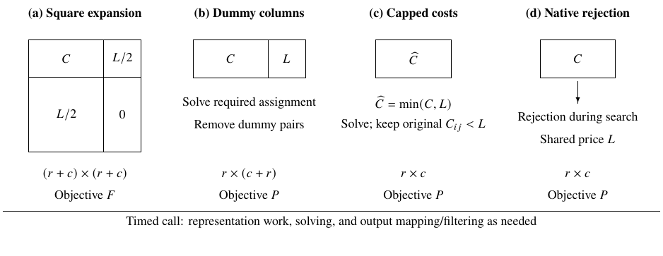
4 Implementation
4.1 Shared architecture and three implementations
Each implementation consists of a thin Python extension and a native core. The extension validates shape, real numeric type, precision, and limit options, prepares a contiguous working representation where necessary, and invokes the core. The single-matrix and batch interfaces, return contracts, and error behavior are identical across the three implementations. Table 3 lists them.
| Label | Main core | Square completion | Distribution |
|---|---|---|---|
| JVRUST | Rust | Rust | laprust 1.1.0 [14]; LAPX 0.12.0 lapjvr [15] |
| JVHYBRID | Rust | C++ | LAPX 0.12.0 lapjvh [15] |
| JVCPP | C++ | C++ | lapcpp 1.1.0 [16] |
Interface compatibility here means that the single-matrix entry points accept the extend_cost, cost_limit, and return_cost arguments of lap.lapjv with the same objective: the finite limit prices unmatched endpoints, and the reported total excludes those penalties. They return matched row and column index arrays, or pairs, rather than lap’s full-length per-row and per-column assignment vectors, so callers of lap need a small output adaptation. Compatibility does not imply identical assignments when optima tie, or identical behavior across precision modes. At , matching and rejection tie in exact arithmetic. Native reductions and search prefer rejection on computed ties, whereas the evaluated padded lap.lapjv can retain the edge. This is not a strict output guarantee: the rounded effective penalty in Section 4.5 can differ from the supplied .
The native dispatcher selects the square kernel only for square inputs with an infinite limit. The square kernel’s initialization and reductions are followed by an augmentation phase that completes the matching. JVRUST executes this phase in Rust. JVHYBRID calls a C++ completion kernel that operates on Rust-owned workspace and preserves the completion strategy and operation order. JVCPP implements the whole algorithm in C++, including the same C++ completion routine. This design permits two comparisons: of completion kernels within otherwise identical Rust code (JVRUST against JVHYBRID), and of complete Rust and C++ implementations of one algorithm (JVRUST against JVCPP).
All rectangular inputs and finite-limit inputs, including square matrices with a finite limit, use the rectangular core. JVRUST and JVHYBRID share that Rust core, so differences between them on these paths cannot be interpreted as evidence of different rectangular algorithms. JVCPP executes the same rectangular algorithm in C++.
4.2 Native rectangular reductions and search
The rectangular core stores separate mappings, potentials, predecessors, distances, and free-row lists. Following Volgenant’s RJV initialization [9] and its later refinements [8], it omits square column reduction and starts column potentials at zero. Its bounded augmenting row reductions lower a column potential only while assigning that column, maintaining non-positive potentials and zero potentials on unused columns.
After reductions, each remaining free root is introduced with a feasible row potential obtained from its available reduced costs and, in finite-limit mode, the rejection penalty. The root’s reduced costs are retained as the initial shortest-path distances, so the first relaxation does not read the cost row again. A shortest-path search then scans real columns. Reaching a free column completes an augmenting path. Reaching an occupied column continues through its assigned row, allowing previous pairs to be rearranged.
The evaluated releases use two bounded rectangular reduction passes. Let count processed rows including immediate retries, and let denote progress through the free list. Further price-lowering displacement retries are permitted while , with reset per pass. The coefficient is for finite-limit squares and required rectangles with and ; otherwise . For and , the additional cap is for required assignment and for finite limits, using the original row count in both passes; otherwise that cap is inactive. When the gate closes, processing continues without further price-lowering retries, and residual free rows enter exact augmenting search. The budget limits reduction work without removing admissible edges or changing the objective. Grouped scans are used for some minima. The square core samples four complete rows to choose an existing initialization strategy when row minima or separated competing blocks favor a different start; this also leaves the objective unchanged.
The 4r/8r caps are empirical heuristics tuned using the paper’s single-call, compact-formulation, scaling, and extended workload families, together with additional structured variants. Evaluation is therefore not held out from heuristic tuning, and exact tuning/evaluation input overlap is not exhaustively established. No reduction-policy ablation isolates the gates’ individual performance effects.
4.3 Implicit rejection terminal
For finite-limit matching, the search compares real-column paths with a rejection terminal. A real edge has reduced cost . Leaving a row unmatched has reduced cost . The implementation stores the best terminal distance and its predecessor row using the variables dummy_distance and dummy_row.
More precisely, let be the shortest-path distance at which row i is reached; the root has . When row i is reached, the rejection candidate updates the terminal distance , the smallest such value so far, and its row. Each unsettled real column j is relaxed to . If is no greater than the smallest unsettled column distance, rejection is selected; otherwise that column is settled, and the search either ends at a free column or continues through the column’s matched row. The terminal therefore adds one distance and one predecessor row to the ordinary search state.
Let D be the distance of the selected endpoint. The root’s potential increases by D. Every settled column j has its potential lowered by and, if matched, its row’s potential raised by the same amount. Assignments are then reversed from the free column, or from the terminal’s predecessor row, back to the root. A free column ending the path has and keeps its zero potential, so column potentials stay non-positive and unused columns stay at zero.
If rejection is selected, the number of real pairs need not increase: the path can replace one row’s real assignment and leave another row unmatched.
Figure 2 illustrates how either search endpoint changes the real matching.
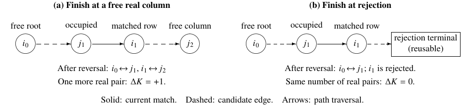
Algorithm 1 summarizes the distinction between this representation and explicit matrix augmentation.
4.4 Storage, batching, and operation bounds
For contiguous wide inputs in the working dtype, the real cost matrix can be borrowed. Solver state is , and pair output is . A tall input may require an orientation copy; dtype or layout conversion may also require a dense copy. Including these costs, storage remains , rather than requiring a c-square or (r+c)-square cost matrix.
Batch input storage is shared with the call. Each active worker retains its own workspace and can reuse it across problems; results are collected in input order, and the lowest failing index is reported on error. JVRUST and JVHYBRID schedule problems on reusable Rayon thread pools. JVCPP uses a reusable C++ thread pool and claims consecutive small problems in chunks, bounded to about 4096 costs per claim so that adjacent difficult problems are not serialized on one worker. Wide inputs require no per-worker padded cost matrix; tall problems can require orientation buffers. This distinction is relevant to peak memory as worker counts increase.
A conservative operation count also exposes an implementation limitation. Each final augmenting search visits at most r occupied real columns before reaching a terminal, scanning up to c candidates at each step. Across r roots, this gives an bound for the augmentation portion. If a row-reduction pass permits scans with budget parameter B, its cost is . The cumulative wider-rectangle bound can use before the additional pass-wide budget is applied, whereas specialized policies bound B by a small constant. Thus , potentially , is a conservative bound that does not exploit every release-specific budget. This is not a claim of an improved worst-case bound over established rectangular assignment methods.
4.5 Numeric and interface contract
All implementations support native float32/float64 storage and explicit precision selection. Required square problems use float64 potentials and distances even for float32 costs; rectangular and finite-limit paths use the selected working precision. Finite conversion overflow is checked.
For a finite limit, the native boundary converts a half-limit and adds it to itself to obtain the working row penalty. In finite precision, need not equal the supplied double-precision L exactly. The theoretical equivalence must therefore be applied to the effective working model. The controlled assignment study uses float64 inputs; the application follow-up retains float32 tracker costs and separately widens them for float64 replay (Appendix C). The independent float32/float64 enumeration study uses binary-rational costs and exactly representable limits. Unlike the capped adapter in Section 3.5, native output does not apply a raw post-filter. The computed-tie preference therefore does not guarantee rejection whenever the raw cost equals the supplied limit.
Positive infinity represents a forbidden edge. NaN and negative infinity in the matrix are outside the documented supported contract. Required matching can be infeasible, and reduced-cost overflow can also cause an error; these conditions should not be conflated. As defensive checks, a path reversal that does not reach its root and a final matching whose row and column mappings disagree are reported as internal errors rather than returned.
All timed methods return int64 pair arrays and omit total-cost calculation. Pair ordering remains native to each interface. Untimed validation checks feasibility and objective values, rather than demanding identical arrays when optimal assignments tie.
5 Experimental design
5.1 Software and environment
The experiments evaluate installed local wheels for LAPX 0.12.0, lapcpp 1.1.0, and laprust 1.1.0. Python 3.14.9 uses NumPy 2.5.4 and SciPy 1.18.1; Python 3.11.17 uses NumPy 2.4.6 and SciPy 1.17.1. Runtime records identify installed package versions and native binaries by SHA-256. The public benchmark programs record these identities for each new run. The primary Windows measurements were collected on 26 October 2026. The main tables and runtime figures report Windows Python 3.14.9 unless explicitly stated otherwise; Section 6.10 and Appendix A compare the complete Windows Python 3.11.17 replication. Appendix B adds the full Linux runs, collected on 26–27 October and archived on 27 October, at both Python versions with the same dependency pairings.
Both Windows environments used the same Intel Core i9-13900KS host, with 16 physical cores and 24 logical processors reported as available to the operating system, on Windows build 26300. The measured solvers were installed from local source-built wheels. The Linux runs used existing installed packages on the same CPU model. The saved records identify the loaded native binaries; matching package versions alone does not establish bit-identical builds. These records do not independently establish every compiler flag or the complete source-to-wheel build lineage. This is not a controlled compiler experiment.
In the Windows runs, single-matrix timings were restricted to logical CPU 0 and batch timings to logical CPUs 0–3, with one or four requested native workers. Four logical processors are not treated as four physical cores. BLAS/OpenMP pools visible to threadpoolctl were limited to one thread. CPU frequency, turbo behavior, and external activity were not fixed. Appendix B records the Linux placement and frequency policy separately.
The base and extension suites ran sequentially within each environment, in separate collection sessions. Per-logical-CPU utilization samples accompany the runs. Inputs, seeds, adapter semantics, shuffled method schedules, and repetition counts match across environments; the original Windows single-case input hashes were independently reconstructed from the saved generator. NumPy, SciPy, native binaries, operating-system state, and batch placement also differ across relevant comparisons, so differences cannot be attributed to the Python interpreter or operating system alone.
5.2 Equivalent objectives and output work
The seven timed solvers in the controlled assignment suites are JVRUST, JVHYBRID, JVCPP, JVX, JVS, JVC, and SciPy. All receive contiguous float64 input. The three implementations of the proposed solver explicitly select float64; JVS disables its default float32 preference.
For required assignment, each public interface receives the real matrix. Its normal rectangular handling is included in timing. For finite limits, JVRUST, JVHYBRID, JVCPP, and JVX use their public limit support. JVS, JVC, and SciPy receive an explicitly augmented (N+M) square matrix, which is constructed inside the timed call. Dummy output pairs are filtered back to the real matrix. Required outputs are normalized to int64 pairs inside timing, and all available total-cost calculations are disabled.
This comparison answers a practical question: what does each configured interface cost when solving the same problem and returning a similar usable result? It is not a measurement of native kernels in isolation. Its finite-limit SciPy configuration uses square expansion. Section 5.6 additionally evaluates two compact formulations, so the square comparison is not treated as the best achievable finite-limit baseline.
5.3 Workloads and timing
Twelve single-matrix cases include uniform square and rectangular inputs, both orientations, a moderately rectangular case, a congested block case, tied costs, and finite positive, tight, negative, and square limits. Each case uses four independently generated matrices. Uniform costs lie in [0,1); the signed case uses [-1,1). Forbidden entries occur with probability 0.5 in the main finite-limit cases and 0.2 in the signed case.
The congested 256 320 case makes three quarters of the rows favor one quarter of the columns. Costs outside that preferred block, and in the opposite block for the remaining rows, receive an increment of 3. The tied case quantizes uniform costs to eighths. These cases test structure beyond independent continuous costs.
Data generation and all reference checks occur outside timing. Each method is warmed on every matrix. A calibration chooses the number of four-matrix cycles for a target 30 ms timing block, with at least one cycle. Nine rounds use a seeded shuffled method order. Garbage collection is disabled only within timed blocks. Results are medians across round averages; interquartile ranges describe timing-round variability rather than the distribution of individual problem instances.
Three batch cases use 64 problems of size 64 80 without a finite limit, 16 problems of size 128 160 with limit 0.5 and 50% forbidden entries, and 1024 problems of size 8 10 without a finite limit. The last case represents many small independent assignments available together. Native JVRUST, JVHYBRID, JVCPP, and JVX batch calls are compared at one and four workers, along with sequential JVRUST and SciPy loops. Batch times include output-list construction and cover the entire batch.
5.4 Correctness validation
An independent memoized enumeration computes optimal objectives for dimensions 0–5 by 0–6, both float32 and float64, ten generated matrices per shape, and five limit settings: infinity, -1, 0, 1, and 2. Costs are integers from -16 through 16 divided by 8, with 20% forbidden entries. Each of the 4,200 problem settings is solved by JVRUST through both laprust and LAPX, by JVHYBRID, and by JVCPP, giving 16,800 calls.
The checks verify pair dimensions, dtype, index bounds, uniqueness, finite selected edges, required cardinality where applicable, and the full penalized objective. Infeasible required problems are identified by enumeration and must produce an error. Binary-rational inputs permit exact objective comparison for this bounded study.
In addition, the Windows validation tests the installed packages against selected Python suites and the Rust and C++ cores against their native unit tests. The Linux replications test the existing installed packages with the same selected Python suites but do not rebuild packages or run native Cargo/CMake tests. Every timed single instance and every batch output is checked against an independently formed SciPy reference objective before measurement.
5.5 Memory measurement
Memory measurements use one fresh process for each method and condition. After imports and a small warmup solve, a contiguous 256 4096 float64 input is created and touched by generation. Windows process counters record the working set and its high-water mark immediately before and after the solve.
The reported additional peak is the increase in the process high-water mark above the input-prepared baseline. It is not an allocation count or total process memory. The base measurements use one trial per condition and are descriptive. Section 5.8 adds five fresh-process trials per condition across a size and orientation sweep, alongside exact transformed-matrix size calculations.
5.6 Implicit rejection against compact formulations
A separate experiment runs JVRUST and JVCPP together with SciPy using (a) the square expansion, (b) r dummy columns, and (c) capped costs as defined in Section 3.5. JVHYBRID shares JVRUST’s rectangular and rejection code and is not repeated. All five methods run in the same randomized timing rounds. Conversion, construction of the transformed costs, solving, removal of dummy or capped pairs, orientation mapping where necessary, and int64 pair construction are included. The binaries, CPU affinity, four instances, nine rounds, and 30 ms target blocks are those of the main study; the samples are archived separately, and ratios within this experiment use its own measurements.
The first five workloads reproduce the main study’s finite-limit inputs by consuming the same random stream in full. Five additional workloads cover 128 160 inputs at limits 0.005 and 0.001 with 50% forbidden costs, a tall 160 128 case at 0.005 with 50% forbidden costs, a wide 64 512 case at 0.005 with 50% forbidden costs, and the congested 256 320 block construction at limit 0.5 without forbidden entries. The additional generator uses seed 20261122. These cases were chosen to exercise rejection and structured competition; they are not a held-out random sample of applications.
Before timing, all five methods are compared with independent enumeration on 2,100 float64 problems: dimensions 0–5 by 0–6, ten binary-rational matrices per shape, 20% forbidden entries, and limits -1, 0, 0.125, 1, and 2. This gives 10,500 solver calls, separately from the main validation. Four targeted cases add 20 calls covering all-forbidden costs, equality ties, the Section 3.2 counterexample, and negative costs. Every timed output is checked for feasibility and penalized-objective agreement with the square-expanded reference.
5.7 Matrix-size scaling
A further experiment measures runtime over a predeclared size grid. The presentation follows the dimension sweeps in Figures 4 and 5 of Linear Sum Assignment with Edition [5]: both dimensions grow together, or one remains fixed, and the same measurements appear on linear and logarithmic axes. This is a new experiment with the uniform-penalty objective, not a reproduction of that paper’s general edit-cost benchmark.
Three shape families use independent uniform [0,1) costs without forbidden entries: square with , 32, 64, 128, 256, 512, and 1024; wide with through 512 in powers of two; and fixed with through 4096 in powers of two. Each family is measured for required assignment and for finite-limit assignment at . A fourth family applies the congested block construction from Section 5.3 with , through 1024 in powers of two, and . This gives 47 shape/objective settings. The uniform finite-limit sweeps exercise the rejection path but need not produce substantial rejection; the congested sweep separately exercises persistent competition and rejection. It is not claimed to be a worst-case construction.
Required curves compare all seven solvers. Finite-limit curves compare JVRUST, JVCPP, JVX, and the three equivalent SciPy formulations from Section 3.5; JVHYBRID shares JVRUST’s finite-limit code. Input and adapter work, int64 outputs, CPU affinity, warmup, four instances, nine shuffled timing rounds, and the 30 ms target block follow the main protocol. At large sizes a single four-matrix cycle can exceed 30 ms; every method still receives nine rounds. Data generation and objective checks are excluded from timing. The input generator uses seed 20261222, and the method-order generator uses 20261223. Each setting receives fresh matrices; a larger input does not contain the smaller input as a submatrix.
The horizontal coordinate is the sum of the original dimensions, not the number of matrix entries or the expanded problem order. Curves connect measured medians; bands and error bars show timing-round interquartile ranges. Both axes are logarithmic in the right panels. No extrapolation or fitted complexity exponent is used. Identical values from different shape families need not represent equal input storage or equivalent problems.
5.8 Larger inputs, special cases, and repeated memory measurements
An additional predeclared grid contains 132 timing cases, 528 method/case settings, and 4,752 timing samples per environment. Large squares have orders 1000, 2000, 3000, and 5000. Large rectangles have shapes 1000 2000, 2000 3000, and 4000 5000, together with their exact transposes. Extreme rectangles pair 64 rows with 4096, 8192, or 16384 columns, again in both orientations. Costs are uniform [0,1); finite-limit large and extreme cases use . This size-dependent limit is distinct from the fixed base scaling experiment.
Structured sweeps use 256 320 and 512 640 inputs. Congestion varies the fraction of rows competing for the first quarter of columns over 0.25, 0.5, 0.625, 0.75, and 0.9, with an off-block increment of 3. Forbidden-entry probabilities are 0, 0.5, 0.9, and 0.99; a finite diagonal is planted to guarantee required feasibility. Tied costs use 1, 2, 8, or 256 quantization levels. Their finite limits are 0.5 for congestion, for forbidden entries, and 0.25 for ties. Signed costs use uniform [-1,1), 50% nominal forbidden entries and a finite feasible diagonal on 256 320 and its transpose, with for finite-limit assignment.
Rejection sweeps use 128 160 and 256 320 inputs, either uniform with 50% forbidden entries or congested without forbidden entries. Eleven limits, 0, 0.0005, 0.001, 0.002, 0.005, 0.01, 0.02, 0.05, 0.1, 0.5, and 4, reuse the same costs within a family. Changing the limit changes the objective, so this experiment does not isolate a causal effect of the rejected fraction. The seed is 20261024, with stable family and instance keys. Runtime transposes use identical costs in transposed orientation. Each case retains four inputs, nine shuffled rounds, and the 30 ms calibration target. Every timed output is validated outside timing, and hashes are checked again to detect input mutation.
The focused required comparison uses JVRUST, JVHYBRID, JVCPP, and native rectangular SciPy; the finite-limit comparison uses JVRUST, JVCPP, capped SciPy, and dummy-column SciPy. JVX, JVS, and JVC are excluded from this extension to keep the larger experiments tractable; the base all-solver comparisons remain in Figures 3–8. Thus a winner in a focused plot means a winner among those selected methods. The declared resource limits are 240 seconds per method/case, 1200 seconds per complete case, and 120 seconds per memory trial. No method was excluded and no measurement failed in either completed extension.
Repeated memory trials use 256 M for , 512, 1024, 2048, and 4096, plus the nonsquare transposes. Required methods are JVRUST, JVCPP, SciPy, and JVX; finite-limit methods are JVRUST, JVCPP, capped, dummy-column, and square-expanded SciPy at . There are 81 conditions and five fresh processes per condition, totaling 405 trials per environment. A small warmup precedes input creation; validation occurs after peak capture. Each shape/trial is paired across methods, while memory orientations use independently generated, distribution-matched arrays to avoid a pre-baseline transpose allocation. Medians and interquartile ranges include process and input variation and are not allocation counts.
Finally, 23 edge fixtures generate 129 solver checks, including 15 expected infeasibility checks. They cover empty dimensions, one row or column, all-forbidden and all-zero costs, costs equal to the rejection limit, signed costs, an isolated infeasible row, and neighboring floating-point values around the limit. The small fixtures use independent exhaustive objectives; tied pair identities need not agree.
5.9 Cross-environment comparison
Each environment contributes 994 method/case settings across 204 cases: 12 single-call, three batch, ten formulation, 47 scaling, and 132 extended cases. All 8,946 raw timing samples per environment are retained. The replication checks recorded input hashes and schedules, then independently recalculates medians and quartiles from the samples. It also compares per-input objectives, cardinalities, and repeated-memory summaries.
Ratios in the manuscript divide within-run median times; they do not average ratios from different sessions. Timing rounds are not paired across environments. Some supplementary focused charts summarize within-round paired ratios and are explicitly labeled that way. Interquartile ranges describe the recorded timing rounds or memory trials, not population confidence intervals. The workload grid is designed rather than sampled from applications; no population significance tests or universal interpreter-speed claim are made.
For each of JVRUST and JVCPP, the 201 non-batch comparisons per environment divide into 71 required cases against ordinary SciPy (seven initial, 20 scaling, 44 extended), 125 finite-limit cases against capped SciPy (ten formulation, 27 scaling, 88 extended), and five additional initial finite-limit cases against expanded SciPy. Thus the compact-denominator subset contains 196 comparisons. A raw method label of scipy in the saved initial suite does not make its finite-limit adapter ordinary required assignment. Capped SciPy is not universally the fastest evaluated compact formulation: dummy-column SciPy can be faster on extreme tall inputs. We keep these denominator classes separate when interpreting wins.
5.10 Controlled specialization within LSAPE
A separate completed experiment uses the July-2017 LSAPE-v4 Hungarian implementation [19]. The unchanged upstream function uses its released initialization defaults. It is not established to be the exact code behind Bougleux and Brun’s 2016 report [5]. All 29 extracted upstream files match the saved archive, and the 72,355-byte author-hosted archive retrieved on 27 October 2026 has the same SHA-256 identity. The adaptation retains Hungarian tree growth, FIFO traversal, dual updates, and path reversal. It introduces no JV reductions, JV search, mathematical orientation, or batching. This is a comparison within LSAPE, not a JV-versus-LSAPE benchmark.
Use for the original row and column dimensions in this experiment, without imposing . With and , original LSAPE uses endpoint prices , while one-sided LSAPE uses . For real pairs, and differ by the constant . Every arm is compared using the restored objective. Original and one-sided solutions may have different pair identities or cardinalities under ties. Table 9 defines all five arms, including unchanged one-sided LSAPE as a baseline in its own right. The padded specialization P is the principal control because U and P read the same fully materialized one-sided buffer and stride, separating specialization from layout. The principal control therefore retains the materialized edit matrix. All compact arms and their regressions remain reported.
The ratios separate four changes. changes only the endpoint-cost formulation in unchanged upstream code and layout. measures combined specialization on the same fully materialized buffer and leading dimension: it skips known-zero column minima, specializes the one-sided search, and adds rejection tracking, while also changing reference dimensions to by-value parameters and using size_t cost indexing. Individual preprocessing and code-generation effects are not isolated. compares ordered rejection scans with guarded tracking at the same compact layout. compares padded and compact tracked representations, including border construction and strided access. The primary includes both formulation and specialization. Compact storage saves only doubles, and every arm still copies real costs; no process-memory benefit is measured.
All arms share one optimized MSVC 19.44 binary, common argument validation, column-major conversion, mapping checks, and new int64 pair outputs. The build uses /O2 and /fp:precise without fast-math or contraction options. Costs and limits must be finite, nonnegative binary64 values bounded by , with . Round-to-nearest and gradual underflow are required. Signed costs, forbidden edges, required assignment, batching, and application traces are outside this experiment’s narrower contract. The guard is not a universal floating-point error proof. Tracking recomputes rejection slack from the selected potential, taking its fast path only for ; otherwise it retains the ordered scan, including the rounded-tie boundary.
The saved strict validation passed 10,190 input cases: 190 small/edge cases with 5,661 enumerated partial-matching states and 10,000 stress cases through dimensions 64. It checked 50,950 full primal-dual certificates, 122,280 exact final mapping/potential array comparisons after signed-zero normalization, and 50,950 ordinary/diagnostic API identity checks. Both capped and square-expanded SciPy objectives were checked on every input, and 50 invalid-input calls were rejected. Non-dyadic limits, neighborhoods of and , negative zero, and subnormal fixtures were included. When relative tolerance underflows to zero, equality is required exactly. The maximum recorded certificate residual was . These checks concern final states, not every intermediate transition or all binary64 inputs.
For each specialized arm, 44 validation cases return at the empty-input bridge, 861 finish without search, and 9,285 enter search. Each tracked arm records 136,089 searches: 44,666 free-column endings, 2,943 rejections on row entry, and 88,480 rejections at dual updates. Both tracking branches execute, with 145,163 fast paths and 292,175 fallbacks. These untimed verification counts establish sampled coverage, not proportions in the timing workload. Unavailable upstream internal counters remain unknown.
The frozen 67-case grid contains eight uniform square cases, sixteen uniform cases, eight congested cases, sixteen uniform cases, twelve extreme rectangles, and seven threshold-tie cases. Squares and shapes use smaller dimensions 128–1024; shapes use 64–512; extreme cases use 64 against 1024, 4096, and 16384. Every nonsquare case has an exact transpose partner. Fixed and size-dependent use separate inputs and objectives. Threshold ties use , , and for uniform . Congestion uses the three-quarter-row, one-quarter-column construction with off-block increment 3. Zero limit is validation-only; the optional additional limit sweep was not performed.
Three fresh processes ran sequentially on the same Windows host between 06:04 and 06:19 UTC on 27 October 2026, using Python 3.11.17, NumPy 2.4.6, and SciPy 1.17.1. Each case/process has four fresh inputs shared by all five methods, yielding 804 generated inputs. The processes share driver, harness, manifest, and binary identities; logical CPU 0 affinity is applied, but frequency and background activity are not fixed. These are same-day/window sessions, not independent-day, reboot, machine, or compiler replications. Each case has nine seeded-shuffled rounds with a 30 ms calibration target over complete four-input cycles, yielding 9,045 timing-round averages. Complete-call timing includes validation, conversion, representation/workspace allocation, solving, mapping checks, and pair output; generation, references, full diagnostics, counters, warmup, and calibration are outside timing. Full certificates and one-sided final-state identity are also checked on every timing input.
Within each session, paired round time ratios have central estimate . Across sessions we report the median and observed minimum/maximum of the three estimates, never pooling the 27 rounds as independent observations. The declared practical ratio band is . Its classifications and session ranges are descriptive, not significance or equivalence claims. Saved exploratory 95% percentile bootstrap intervals use 10,000 paired-round resamples conditional on four fixed inputs and an IID-pairs assumption; serial correlation and thermal drift can invalidate nominal coverage. Table 10 brackets are session ranges, not those intervals. Separately summarized factor medians need not multiply exactly. Twelve rows were preselected before measurement, and all 67 cases remain in the saved exports with absolute times, both row-rejection and unmatched-smaller-side fractions, and diagnostic coverage.
6 Results
6.1 Correctness outcomes
All four solver entry points agree exactly with enumeration on all 16,800 calls: JVRUST through laprust and through LAPX, JVHYBRID, and JVCPP. Eighty calls correspond to infeasible required problems and correctly produce errors. The maximum absolute objective discrepancy on feasible settings is zero. This result applies to the finite grid and shapes described above.
The installed packages pass the selected Python suites, excluding setup and editable-install tests: 2,704 LAPX, 1,167 lapcpp, and 1,167 laprust tests. The corresponding source checkouts pass 24 Rust unit tests for laprust and 21 for LAPX’s solver core with all features enabled, and lapcpp’s native C++ test program. Both Windows environments pass these same suites. These suites include numeric contract cases, primal-dual certificates, coexistence and concurrency checks, fault injection, and comparisons between completion implementations. They support implementation confidence but do not constitute a proof for arbitrary floating-point inputs or every platform.
All 336 single-instance benchmark checks and 11,040 batch-output checks pass in each environment. The extension adds 2,112 timed-input objective checks and 129 edge checks per environment, all passing. All 3,520 saved formulation, scaling, and extended timing objectives agree exactly between environments, with no recorded match-count differences. The 405 repeated-memory objectives also agree exactly, giving 3,925 compared objectives in total. Main individual and batch outputs retain validation flags rather than full per-output objective records, and memory records contain no pair counts. Pair-array equality is not required when optimal assignments tie.
6.2 Single-matrix runtime
Table 4 reports median microseconds per matrix. Figure 3 shows the same cases with timing-round interquartile ranges. JVS, JVC, and SciPy values in finite-limit rows include explicit augmentation.
| Case | JVRUST | JVHYBRID | JVCPP | JVX | JVS | JVC | SciPy |
|---|---|---|---|---|---|---|---|
| Square 128 128 | 59.89 | 61.14 | 66.32 | 108.83 | 102.69 | 262.34 | 259.93 |
| Square 512 512 | 1019.48 | 1039.16 | 1107.05 | 3121.51 | 3092.78 | 6045.00 | 4937.23 |
| Wide 64 512 | 11.44 | 11.40 | 12.44 | 853.91 | 795.50 | 1786.44 | 71.08 |
| Tall 512 64 | 24.44 | 23.55 | 75.19 | 856.77 | 809.74 | 1753.49 | 145.15 |
| Rectangle 256 320 | 71.76 | 71.26 | 74.79 | 169.57 | 164.13 | 4231.89 | 533.39 |
| Blocks 256 320 | 1115.14 | 1036.19 | 1043.46 | 9351.98 | 9103.25 | 5944.02 | 1410.87 |
| Ties 128 160 | 49.74 | 52.02 | 51.36 | 58.91 | 55.58 | 89.79 | 75.02 |
| 128 160, | 13.72 | 13.33 | 21.70 | 478.44 | 396.87 | 2290.77 | 423.37 |
| 256 320, | 68.91 | 68.73 | 81.47 | 3462.84 | 2785.68 | 15711.00 | 2153.43 |
| Tight 128 160, | 9.42 | 10.01 | 16.44 | 444.33 | 368.23 | 2745.54 | 1139.07 |
| Signed 128 160, | 13.71 | 14.34 | 21.92 | 952.81 | 762.94 | 3118.85 | 407.94 |
| Square 128, | 85.14 | 87.05 | 101.77 | 187.40 | 180.84 | 629.59 | 491.10 |
An implementation of the proposed solver is fastest among the configured methods in all seven required cases and all five finite-limit cases. On the uniform 256 320 problem, JVRUST takes 71.76 microseconds versus 533.39 for SciPy. The tall case costs more than the corresponding wide case for JVRUST and SciPy, consistent with orientation-dependent work, although this experiment does not isolate every source of the difference.

The required congested case now favors the native implementations: JVRUST takes 1.115 ms, JVHYBRID 1.036 ms, and JVCPP 1.043 ms, versus 1.411 ms for SciPy and 5.944 ms for JVC. This result concerns required assignment; the finite-limit compact comparison in Section 6.5 has a different ordering. On tied costs, JVRUST takes 49.74 microseconds and JVS 55.58. Matrix dimensions alone do not predict the fastest method, and the results do not identify the separate effects of initialization, reductions, and search.
Finite-limit JVRUST runtimes range from 9.42 to 85.14 microseconds. The 128 160, case is 30.9 times faster than the square-augmented SciPy configuration. This ratio applies to that interface/formulation comparison; Section 6.5 reports a separate paired comparison against smaller and unexpanded alternatives.
Most finite-limit timing instances still have a complete smaller-side matching at the optimum. The tight case averages 119.75 pairs, leaving 8.25 of 128 smaller-side rows unmatched. Thus the principal measured benefit in the other finite-limit cases is avoiding the augmented formulation, rather than avoiding a large fraction of real matches. The added rejection and structure sweeps broaden the timed evidence (Section 6.8), while exhaustive validation remains restricted to small inputs.
The implementations differ even where their algorithmic structure is shared. JVRUST and JVHYBRID are within a few percent on the required square cases, with JVRUST faster in both; the C++ completion kernel gives no whole-call advantage on those two cases. On shared Rust rectangular paths, timing gaps are not evidence of different algorithmic capabilities. JVCPP is faster than JVRUST on the required congested case, but takes 1.18–1.75 times as long on the five finite-limit cases and 3.08 times as long on the tall 512 64 input. The tall and wide cases use independently generated matrices. Paired transposes in Section 6.7 broaden the orientation evidence, but phase-level profiling is needed to separate copying, search, and output costs.
6.3 Batch runtime
Table 5 compares whole-batch latencies. Four-worker native calls improve throughput within the restricted four-logical-processor affinity, but the amount depends on the workload.
| Method | 64 (64 80) required, ms | 16 (128 160) , ms | 1024 (8 10) required, ms |
|---|---|---|---|
| JVRUST sequential loop | 0.721 | 0.405 | 1.262 |
| JVRUST batch, 1 worker | 0.658 | 0.394 | 0.509 |
| JVRUST batch, 4 workers | 0.292 | 0.219 | 0.246 |
| JVHYBRID batch, 1 worker | 0.660 | 0.391 | 0.508 |
| JVHYBRID batch, 4 workers | 0.304 | 0.216 | 0.274 |
| JVCPP batch, 1 worker | 0.664 | 0.468 | 0.521 |
| JVCPP batch, 4 workers | 0.274 | 0.209 | 0.248 |
| JVX batch, 1 worker | 1.577 | 7.813 | 6.370 |
| JVX batch, 4 workers | 2.944 | 5.156 | 15.125 |
| SciPy sequential loop | 2.563 | 7.193 | 2.859 |

JVRUST’s four-worker call is 2.25 times faster than its one-worker call on the 64 80 batch, 1.80 times faster on the finite-limit batch, and 2.07 times faster on the 1024-problem batch. With larger problems, serial batching is close to the JVRUST loop. With 1024 problems of size 8 10, the batch call is 2.48 times faster than the loop even with one worker, consistent with amortizing Python-call and output-handling overhead; four workers make it 5.12 times faster. JVHYBRID follows the same broad batching pattern. JVCPP’s one-worker medians are above JVRUST’s in all three cases. With four workers, JVCPP is approximately 6.3% faster on the 64 80 batch and 4.8% faster on the finite-limit batch, while its 0.248 ms median is close to JVRUST’s 0.246 ms on the 1024-problem batch. The Python 3.11 replication retains the first two orderings and reverses the last small gap (Section 6.10). The 1024-problem JVCPP four-worker call has a broad timing-round interquartile range in Python 3.14, 0.242–0.529 ms, versus 0.231–0.244 ms in Python 3.11. Close medians should therefore not be treated as a stable implementation equivalence. These are descriptive comparisons of round medians.
The JVX four-worker call is slower than its serial call on both required batches, while improving the finite-limit batch. The result demonstrates that requesting more workers is not inherently beneficial. This study does not isolate scheduling, Python dispatch, and memory effects sufficiently to assign that regression to one cause.
Across the four environments, all three batch workloads are retained in Tables 5, A2, B3, and B4. For 64 required problems, JVRUST loop/batch ratios range from 1.10–1.14 with one worker and 2.47–3.93 with four. For 16 finite-limit problems, they are 1.02–1.03 and 1.85–3.28. For 1024 required problems, they are 2.04–2.48 and 4.76–5.86. These are observed ranges of ratios of within-environment median complete-call times, not paired-log estimates or confidence intervals. The larger-problem one-worker gains are small; serial batching combines call, output, allocation, and workspace effects without isolating workspace reuse. Ratios above four against a Python loop do not establish superlinear parallel scaling.
6.4 Peak working set
Table 6 reports additional peak working set above the input-prepared baseline. The common 8 MiB input is already resident. Figure 5 plots these increments.
| Method | Required, MiB | Finite , MiB |
|---|---|---|
| JVRUST | 0.102 | 0.117 |
| JVHYBRID | 0.207 | 0.148 |
| JVCPP | 0.137 | 0.141 |
| JVX | 128.133 | 144.688 |
| SciPy | 0.199 | 144.797 |

The measured increments agree closely with the 128 MiB padded and 144.5 MiB augmented cost-matrix calculations, plus smaller workspace effects. The three native implementations add 0.10–0.21 MiB in these conditions. Required SciPy is similarly small at 0.199 MiB, confirming that this memory benefit is shared by existing native rectangular methods.
The small increments do not imply zero allocation. They are process-level measurements affected by prior high-water marks, allocator reuse, page residency, and the single-trial design. Their main interpretation is the absence of the much larger transformed dense cost buffer in this wide-input experiment.
6.5 Implicit rejection against compact formulations
The additional enumeration has zero objective error on all 10,500 grid calls, and the 20 targeted checks pass. All 200 timed-instance checks also pass. Table 7 reports the paired run. The mean unmatched count refers to smaller-side rows under JVRUST; equality ties may permit alternative optimal cardinalities.
| Case | Unmatched | JVRUST | JVCPP | Square | Dummy cols | Capped |
|---|---|---|---|---|---|---|
| 128 160, | 0.00 | 13.23 | 21.37 | 412.28 | 245.08 | 122.29 |
| 256 320, | 0.00 | 68.31 | 80.59 | 2146.71 | 1264.91 | 519.54 |
| 128 160, | 8.25 | 10.55 | 17.15 | 1171.91 | 260.40 | 113.61 |
| Signed 128 160, | 0.00 | 13.78 | 22.05 | 408.58 | 226.56 | 131.11 |
| Square 128, | 0.00 | 84.32 | 99.59 | 485.99 | 386.61 | 209.59 |
| 128 160, | 87.75 | 6.18 | 7.55 | 850.61 | 168.85 | 71.33 |
| 128 160, | 117.00 | 5.71 | 6.61 | 492.66 | 155.66 | 64.00 |
| Tall 160 128, | 89.50 | 13.28 | 12.44 | 844.37 | 165.54 | 77.01 |
| Wide 64 512, | 18.00 | 9.02 | 9.15 | 2071.05 | 199.22 | 84.29 |
| Blocks 256 320, | 112.00 | 1014.16 | 1016.07 | 2475.79 | 1567.52 | 697.45 |
For the , workload, changing SciPy from square expansion (412.28 microseconds) to capped costs (122.29 microseconds) reduces complete-call latency by 3.37 times. A further 9.24-fold gap remains against JVRUST (13.23 microseconds), giving a square/Rust ratio of 31.16. The smaller dummy-column construction falls between the two SciPy alternatives. The within-SciPy comparison measures formulation and adapter work; the residual native-versus-SciPy gap is not attributed to individual native design elements.
JVRUST is faster than capped SciPy in nine of ten finite-limit cases, by factors of 2.49–11.53 on those cases; JVCPP is also faster in the same nine cases. Congested blocks remain a counterexample at 256 320: capped SciPy takes 0.697 ms, JVRUST 1.014 ms, and JVCPP 1.016 ms. Capped SciPy is therefore about 1.45–1.46 times faster, despite both native methods avoiding dimensional expansion. The corresponding Python 3.11 ratios are 1.48 for JVRUST and 1.40 for JVCPP. This modest finite-limit loss coexists with the native required-assignment win in Table 4. The rejection-heavy cases at and leave 87.75 and 117 rows unmatched on average. The and uniform cases at leave no smaller-side rows unmatched; their differences therefore cannot be explained by avoiding many real matches. These are descriptive ratios of within-run medians, not confidence intervals or an estimate of general application speedup.
The alternatives also change the storage comparison. For a 256 4096 float64 problem, square expansion requires a 144.5 MiB transformed cost matrix, the r-dummy-column construction requires 8.5 MiB, and capped costs require 8 MiB. These are exact buffer-size calculations, not new process-memory measurements. For a suitable wide input, the proposed solver borrows the original costs and needs solver state; capped SciPy avoids the square expansion but our adapter creates an additional original-size cost array. The distinction is avoiding a transformed copy, as well as the number and organization of columns scanned.
6.6 Matrix-size and aspect-ratio scaling
Figures 6 and 7 show the uniform required and finite-limit sweeps, respectively. Figure 8 shows the congested finite-limit sweep with the same plotting convention. Every curve comes from the separate paired scaling run; ratios are calculated within that run. All 1,208 timed-instance feasibility and objective checks pass, and 2,718 timing-round samples are archived across 302 method/setting combinations.
The shape sweeps distinguish increasing the smaller dimension from increasing only the larger one. At 1024 1024 without a finite limit, JVRUST takes 4.112 ms, JVHYBRID 4.123 ms, JVCPP 4.391 ms, and SciPy 23.051 ms. At 64 4096, JVRUST takes 0.067 ms and SciPy 0.515 ms, while JVX takes 66.004 ms. Thus a large sum of dimensions does not imply a difficult problem for every implementation. Padding changes both the represented dimensions and the search work; the present measurements do not isolate those effects individually.
For finite-limit 512 2048 inputs at , JVRUST takes 0.380 ms, capped SciPy 4.306 ms, square-expanded SciPy 28.193 ms, and JVX 1293.104 ms. Transformed dimensions alone do not predict runtime. Across the uniform required and finite-limit scaling sweeps, JVCPP/JVRUST ratios span 0.931–1.908 in Python 3.14; at the largest point of each shape/regime family the medians differ by at most 6.9% relative to JVRUST. Neither implementation wins every point. The narrowing gaps are consistent with a contribution from fixed setup costs, but these measurements do not separate setup from search. All uniform finite-limit scaling instances have complete smaller-side matchings under JVRUST, so those curves characterize finite-limit handling on easy-to-match random costs.
The congested curve has several sampled ordering changes rather than one persistent crossover. For this sampled 5:4 family, from the cap is enabled; its factor was chosen using the paper’s own congestion workload families and additional variants, so these crossovers are not a held-out test of the heuristic. Enabled describes the source condition, not whether a solve exhausts the cap. In Python 3.14, JVRUST is faster than capped SciPy at , 32, and 64; capped SciPy is faster at and 256; the medians nearly tie at , with JVRUST 0.06% slower; and JVRUST is faster again at . At 1024 1280, JVRUST takes 15.689 ms, JVCPP 15.393 ms, and capped SciPy 18.432 ms. JVCPP is slower than capped SciPy at , 128, and 256 but faster at and 1024. In Python 3.11, JVRUST is faster at as well as . JVRUST leaves 43.75% of the smaller side unmatched at every tested congested size, including 448 of 1024 rows at the largest point. Substantial rejection alone therefore predicts neither an advantage nor a disadvantage for the native terminal strategy.


6.7 Larger matrices and extreme aspect ratios
The focused comparisons favor the native implementations on the tested large uniform matrices in both Windows environments. Table 8 includes representative large and signed cases. At 5000 5000 without rejection, JVRUST takes 257.38 ms in Python 3.14 and 258.89 ms in Python 3.11; SciPy takes 1078.88 and 1091.22 ms. At the size-dependent finite limit , the same-sized costs define a different optimization problem: JVRUST takes 11.44 and 11.47 ms, compared with 139.82 and 133.44 ms for capped SciPy. These required and finite-limit times are not an ablation of rejection overhead.
| Case | JVRUST 3.14 | Ref. 3.14 | JVRUST 3.11 | Ref. 3.11 |
|---|---|---|---|---|
| 5000 5000 R | 257.383 | 1078.878 | 258.888 | 1091.220 |
| 5000 5000 F | 11.436 | 139.817 | 11.470 | 133.435 |
| 4000 5000 R | 13.881 | 130.450 | 13.871 | 139.313 |
| 4000 5000 F | 8.473 | 105.183 | 8.616 | 97.112 |
| Signed 256 320 R | 0.084 | 0.862 | 0.078 | 0.835 |
| Signed 256 320 F | 0.063 | 0.467 | 0.069 | 0.556 |
| Signed 320 256 R | 0.115 | 0.911 | 0.110 | 0.942 |
| Signed 320 256 F | 0.096 | 0.574 | 0.098 | 0.624 |
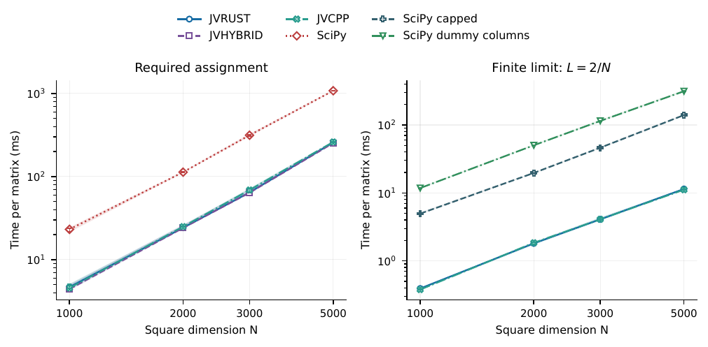
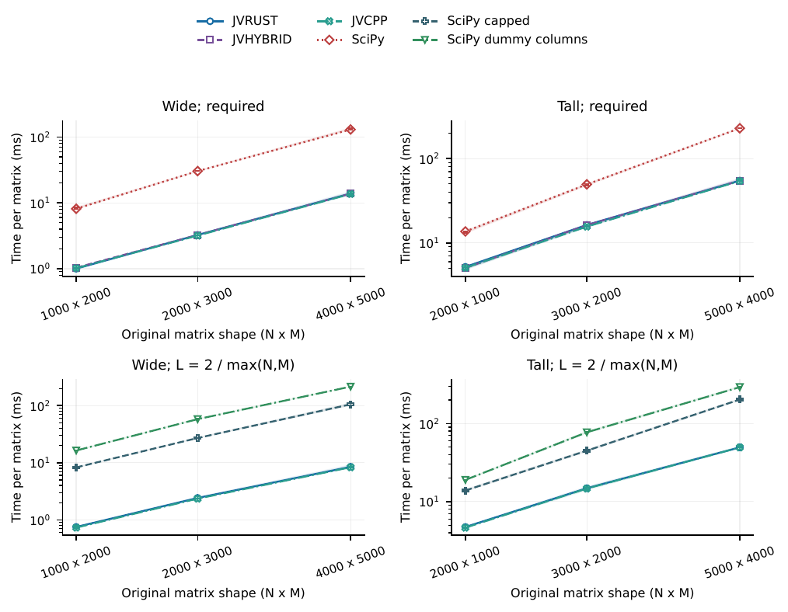
On the large square and large rectangle grids, JVCPP/JVRUST median-time ratios span 0.954–1.069 in Python 3.14 and 0.955–1.051 in Python 3.11. Relative to JVRUST, the differences are at most about 6.9% and 5.1%, respectively, with neither implementation winning every point. These ranges describe the selected large inputs; the base uniform sweep has larger gaps at some smaller points. The hybrid completion kernel gives no uniform benefit.
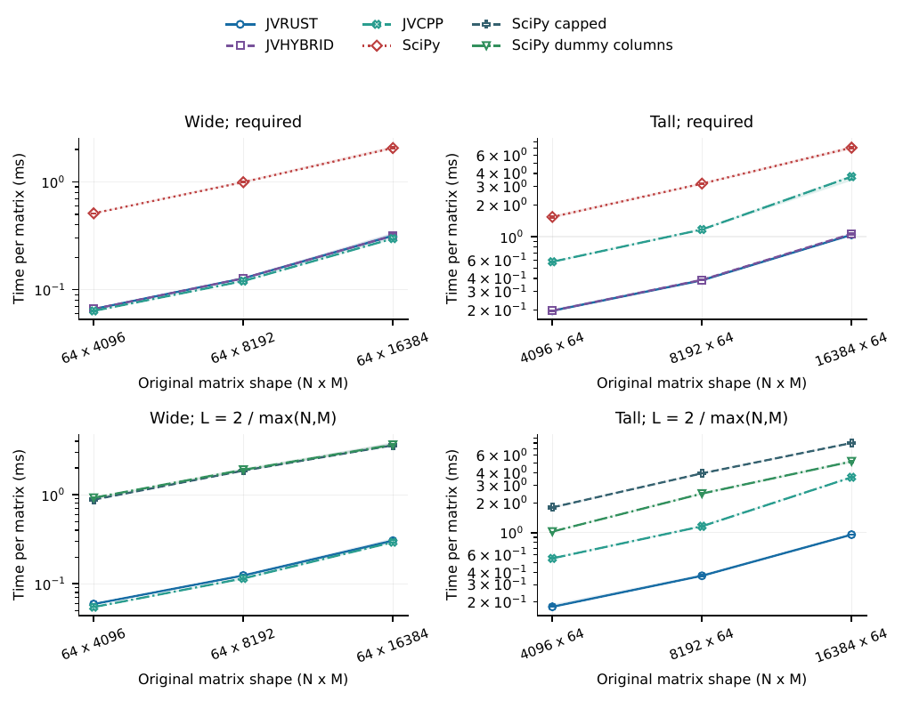
Extreme tall inputs retain a different implementation pattern: JVCPP/JVRUST ratios range from 2.93 to 3.78 in Python 3.14 and 2.82 to 3.52 in Python 3.11. The signed cases in Table 8 also show larger tall than wide times for JVRUST in both regimes. Paired runtime transposes establish that orientation differences persist on identical cost values, but do not identify a single cause in orientation conversion, search, or output work.
Dummy-column SciPy can be faster than capped SciPy on extreme tall finite-limit inputs. At 16384 64 it takes 5.210 versus 7.993 ms in Python 3.14 and 5.747 versus 8.450 ms in Python 3.11. JVRUST takes 0.956 and 1.075 ms, respectively, remaining faster than both compact formulations.
6.8 Structure, rejection, and edge cases
Required congestion favors the native implementations at every tested row fraction and both shapes in both Windows environments. Finite-limit congestion is more variable. Both tested 5:4 shapes have the 8r cap enabled; its selection using the paper’s own congestion workload families and additional variants gives these sweeps the same tuning dependence discussed in Sections 4.2 and 6.6. At 256 320 and , competing-row fraction 0.25 favors JVRUST and JVCPP; fractions 0.5, 0.625, 0.75, and 0.9 favor capped SciPy. At 512 640, fractions 0.25, 0.5, and 0.625 favor the native methods, while 0.9 favors capped SciPy. At fraction 0.75 the native medians are slightly above capped SciPy in Python 3.14 and slightly below it in Python 3.11. These sampled points do not locate a continuous crossover threshold or show that a single initialization policy explains all congestion behavior.
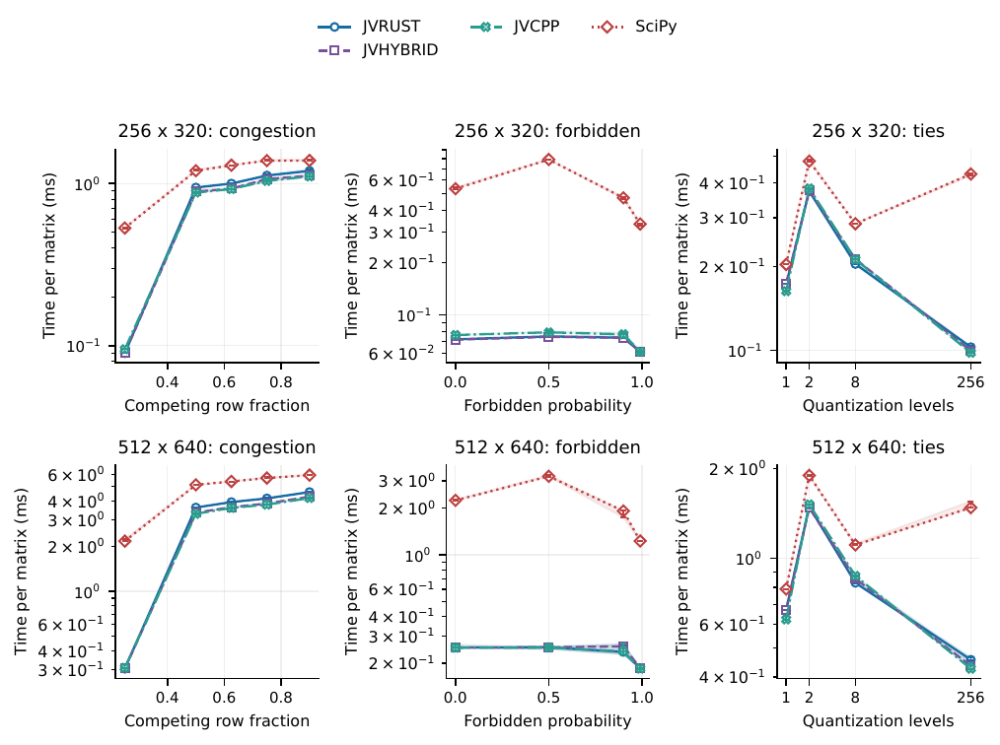
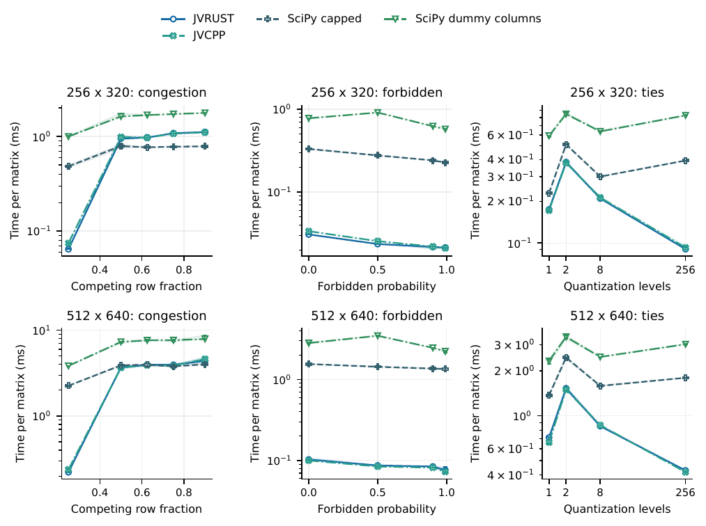
The native methods retain their advantage over the matching SciPy baseline throughout the tested forbidden-entry, tie, and signed grids in both Windows environments. This includes dense representations with 99% nominal forbidden entries and completely tied inputs; it does not compare sparse data structures or establish performance for arbitrary numerical ranges. Distinct selected pairs can still be optimal under ties.
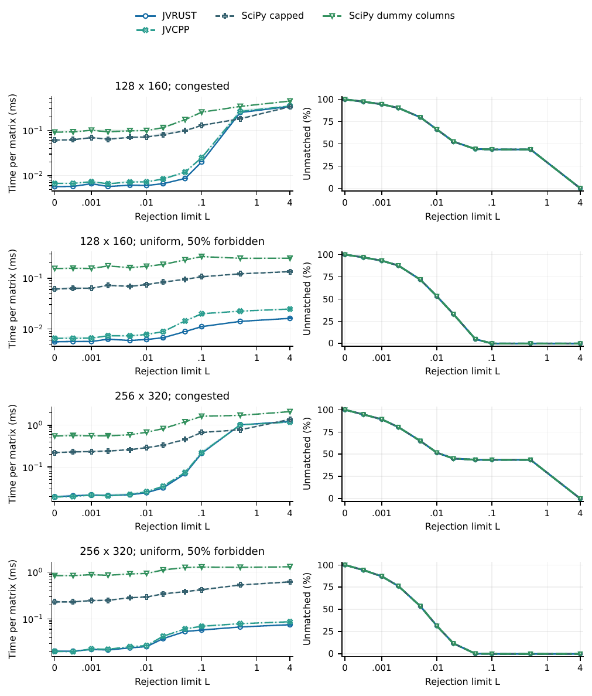
The congested rejection sweeps have roughly 43.75% unmatched smaller-side rows over intermediate limits and full matching at . At , capped SciPy leads JVRUST and JVCPP for both tested shapes in both Windows environments. At it still leads JVCPP at 128 160 in both runs, while the close JVRUST ordering changes between environments; both native methods lead at 256 320. Together with the congestion grid, these cases give nine extended losses for each method in Python 3.14, and seven JVRUST and eight JVCPP losses in Python 3.11. The limit changes both the optimal matching and the search problem. The separate edge fixtures pass in both Windows environments, including expected infeasibility and floating-point neighbors of the penalty boundary; this bounded validation is not a general numerical stability proof.
6.9 Repeated memory measurements
The five-trial sweep confirms both formulation and orientation effects. At 256 4096 and , median additional peak working set in Python 3.14 is 0.137 MiB for JVRUST, 8.059 MiB for capped SciPy, 8.633 MiB for dummy-column SciPy, and 144.711 MiB for square-expanded SciPy. The corresponding Python 3.11 medians are 0.105, 8.090, 8.652, and 144.738 MiB. The maximum absolute difference between the two environments’ medians over all 81 repeated conditions is 0.10547 MiB.
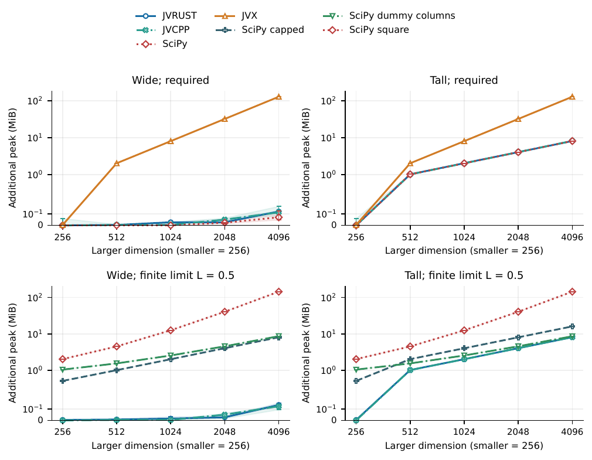
The small wide-input native footprint must not be generalized to tall inputs. For 4096 256 at , JVRUST’s medians are 8.117 and 8.137 MiB in Python 3.14 and 3.11; capped SciPy’s are 16.047 and 16.102 MiB, while dummy-column SciPy’s are 8.598 and 8.656 MiB. Our capped adapter first creates a capped array in the original tall orientation, after which SciPy allocates a transposed array of the same size; the dummy-column adapter orients before constructing its buffer. This additional original-size allocation is specific to the evaluated adapter path; capped-cost assignment can instead use a single oriented buffer. Square-expanded SciPy remains near 144.7 MiB. The observations are consistent with orientation-related work and storage, but process counters do not trace allocations. Near-zero increments should be compared in absolute units, because percentage ratios can become unstable or undefined.
6.10 Consistency across Python environments
In the two Windows environments, JVRUST beats the relevant SciPy baseline in 188 of 201 non-batch cases in Python 3.14 and 191 of 201 in Python 3.11. Its wins by suite are 12/12 single-call, 9/10 formulation, 44/47 scaling, and 123/132 extended cases in Python 3.14; the latter two counts become 45/47 and 125/132 in Python 3.11. JVCPP wins 188/201 and 189/201, with the same Python 3.14 counts and 44/47 scaling and 124/132 extended wins in Python 3.11. JVHYBRID beats SciPy in all 76 comparable cases in both Windows environments. The 201-case total includes 71 required cases against ordinary SciPy, 125 finite-limit cases against capped SciPy, and five additional finite-limit cases against expanded SciPy. JVRUST wins all 71 required cases, 112/125 and 115/125 capped cases in Windows Python 3.14 and 3.11, respectively, and all five expanded cases. The expanded wins must not be conflated with capped comparisons; the capped adapter is not universally the fastest compact alternative. Across all 478 matching native/SciPy method/case comparisons in each Windows environment, the largest native/SciPy median-time ratio is 1.475, for JVRUST on the Python 3.11 finite-limit 256 320 formulation case. Thus none of the native methods is more than about 1.48 times as slow as its matching SciPy baseline on the Windows grid; this descriptive bound does not extend to arbitrary inputs. The corresponding four-environment bound is about 1.50 (Appendix B).
Four of the 478 native/SciPy method/case orderings reverse: JVRUST and JVCPP on the 512 640 extension congestion case at competing-row fraction 0.75 and ; JVRUST on the 128 160 congested rejection case at ; and JVRUST on the 512 640 base congested scaling case at . Each favors capped SciPy in Python 3.14 and the native method in Python 3.11. All native/SciPy median gaps in these four comparisons are within 4.4% of SciPy in each environment. These close orderings do not establish interpreter effects or statistically reliable advantages. Figures A1–A2 retain them explicitly.
The largest congested scaling point favors JVRUST in both runs: its median time divided by capped SciPy’s is 0.851 in Python 3.14 and 0.843 in Python 3.11. Intermediate cases have the mixed behavior described in Section 6.6. For 1024 problems of size 8 10, JVRUST’s loop-to-batch speedups are 2.48 and 2.28 with one worker, and 5.12 and 4.76 with four. Four-worker JVCPP is about 6.3% and 6.8% faster than JVRUST on the 64 80 batch. On the smallest-problem batch their medians differ by less than 1.1%, with the ordering changing between runs.
Across all evaluated solvers, 66 of 2,104 within-case pairwise median orderings reverse, and the fastest median changes in 39 of 204 cases. Requiring a relative gap above 2% in both environments leaves eight reversals; requiring 5% leaves one; requiring 10% leaves none. The gap is the larger median divided by the smaller, minus one. These are post-hoc descriptive filters, not statistical significance thresholds. They qualify broad ranking claims without changing the recorded objectives or method coverage.
Median time(3.11)/time(3.14) ratios across equally weighted method/case settings are 1.000 for single-call, 0.999 for batch, 1.038 for formulation, 1.005 for scaling, and 1.018 for extended cases. These summaries describe the chosen grid, not an application mix or a universal speedup. NumPy, SciPy, native binaries, and session conditions differ. Independent sessions and controlled builds would be needed to assess small gaps or separate interpreter effects.
6.11 Controlled LSAPE results
Table 9 names the original and unchanged one-sided baselines separately from the three adapted arms. Table 10 decomposes the 12 preselected cases; Table 11 retains the complete-grid primary comparison, including regressions.
| Arm | Column-major buffer | Implementation |
|---|---|---|
| Original O | ; stride | Unchanged LSAPE-v4, endpoint prices |
| One-sided U | ; stride | Same upstream function, prices |
| Compact scan S | ; stride | LSAPE-v4-1S specialization with ordered reached-row rejection scans |
| Compact tracked T | ; stride | Same specialization with guarded rejection tracking and scan fallback |
| Padded tracked P | ; stride | Tracked specialization reading U’s fully materialized one-sided buffer geometry |
| Shape / series | (ms) | unmatched (%) | ||||
|---|---|---|---|---|---|---|
| 1024 1024, F | 19.796 | 0.00 | 0.42 [0.41, 0.43] | 1.13 [1.11, 1.13] | 0.47 [0.47, 0.48] | 0.73 [0.70, 0.74] |
| 512 640, F | 8.510 | 0.00 | 2.16 [2.15, 2.18] | 1.11 [1.11, 1.12] | 2.41 [2.39, 2.43] | 0.85 [0.85, 0.85] |
| 640 512, F | 8.001 | 0.00 | 0.55 [0.55, 0.59] | 1.18 [1.17, 1.18] | 0.66 [0.66, 0.69] | 0.96 [0.93, 0.97] |
| Blocks 1024 1280, F | 36.319 | 43.75 | 1.02 [0.99, 1.08] | 1.12 [1.12, 1.14] | 1.15 [1.13, 1.20] | 0.78 [0.75, 0.78] |
| Blocks 1280 1024, F | 37.731 | 43.75 | 1.38 [1.37, 1.42] | 1.11 [1.11, 1.12] | 1.53 [1.53, 1.58] | 0.91 [0.90, 0.91] |
| 256 1024, F | 3.835 | 0.00 | 2.26 [2.21, 2.29] | 1.09 [1.06, 1.11] | 2.46 [2.39, 2.49] | 0.98 [0.98, 1.01] |
| 1024 256, F | 4.463 | 0.00 | 0.94 [0.93, 0.96] | 1.16 [1.14, 1.17] | 1.09 [1.06, 1.12] | 0.96 [0.94, 0.97] |
| 64 16384, F | 7.973 | 0.00 | 1.26 [1.24, 1.27] | 1.05 [1.02, 1.06] | 1.32 [1.29, 1.33] | 0.87 [0.85, 0.88] |
| 16384 64, F | 8.658 | 0.00 | 0.97 [0.95, 0.99] | 1.15 [1.15, 1.20] | 1.13 [1.12, 1.15] | 0.77 [0.76, 0.80] |
| 64 16384, S | 6.250 | 11.33 | 0.96 [0.92, 0.98] | 1.03 [1.03, 1.07] | 0.99 [0.99, 1.01] | 0.89 [0.84, 0.91] |
| 16384 64, S | 6.521 | 11.33 | 0.96 [0.95, 0.98] | 1.15 [1.12, 1.17] | 1.10 [1.10, 1.11] | 0.82 [0.81, 0.84] |
| Ties 256 320, Q | 0.352 | 27.64 | 0.91 [0.90, 0.96] | 1.16 [1.13, 1.19] | 1.07 [1.06, 1.09] | 1.00 [0.99, 1.02] |
| Case block | Cases | Gains for P | Regressions for P | Within band |
|---|---|---|---|---|
| A: squares | 8 | 0 | 7 | 1 |
| B: uniform 5:4 rectangles | 16 | 4 | 9 | 3 |
| C: congested 5:4 rectangles | 8 | 8 | 0 | 0 |
| D: uniform 4:1 rectangles | 16 | 14 | 0 | 2 |
| E: extreme rectangles | 12 | 10 | 0 | 2 |
| F: threshold ties | 7 | 3 | 0 | 4 |
| All cases | 67 | 39 | 16 | 12 |
Across all 67 cases, changing only the one-sided formulation in unchanged upstream code () produces 20 gains, 41 regressions, and six estimates inside the descriptive 3% band. The original-to-specialized-padded ratio has 39 gains for P above 1.03, 16 regressions below 0.97, and 12 estimates inside the band (Table 11). The compact tracked total has 34 gains, 27 regressions, and six inside. The matched-layout specialization ratio exceeds 1.03 in 66 cases, with one inside the band and none below it. One-sided costs alone regress more often than they improve; specialization is useful relative to unchanged one-sided LSAPE, but neither total adaptation universally improves on original LSAPE.
Formulation explains the largest measured changes. At fixed-limit , , , and . The transposed case instead has . At , specialization gives , yet the total is . The study preserves these losses on squares and moderate rectangles rather than attributing the total ratio to specialization alone.
The compact scan/tracked ratio has no gain above 1.03, two regressions below 0.97, and 65 estimates inside the band. There is no consistent practical benefit from rejection-slack tracking in this campaign. The layout ratio exceeds 1.03 in 24 cases, favoring padded storage, with 43 inside the band and none below it. Compact T has 14 favorable central estimates versus P, all within the descriptive 3% band; equivalently, no estimate exceeds 1.03. Thus compact layout has no gain beyond that band, rather than never helping. The congested case has . Layout sensitivity does not establish a cache-conflict mechanism, and common interface work may mask kernel effects.
Realized rejection also changes interpretation. The fixed-limit case leaves 99.61% of original rows unmatched while matching the entire smaller side. Its size-dependent-limit counterpart leaves 11.33% of the smaller side unmatched. Reporting both fractions distinguishes dimensional surplus from optional rejection. These finite-grid observations characterize the recorded host, compiler, timing contract, and inputs, not a population ranking or an equivalence result.
6.12 Real-video tracking and captured assignments
Two supplied 999-frame clips derived from MOT16-04 and MOT20-03 [20, 21] drive Centroid and SORT [22] in pyppbox V4 [23], using GT boxes or cached RF-DETR Nano detections at 768 pixels and confidence 0.20 [24]. Nine shuffled rounds measure tracker updates; decoding, detection, Person construction and evaluation are excluded. Supplied-box scores use motmetrics [25]. A separate replay compares every backend on the same captured costs in each precision. GT and RF results originate from separate sessions, with ratios computed within each pipeline/session; Appendix C gives the protocol and absolute results. The pyppbox toolbox was introduced in the PoseTReID extension study [26].
Across JVRUST, JVHYBRID and JVCPP, common-matrix SciPy/method ratios span 1.173–3.155. Centroid-update ratios are smaller, 1.010–1.114; SORT ratios span 0.992–1.022, including near-equal and slightly slower medians. Table 12 retains every evaluated method. Its ranges span the designed pipelines, rather than timing-round IQRs or a population distribution. The application results therefore support assignment-interface benefits while showing their attenuation in tracker updates.
All recorded common-corpus objectives agree with SciPy. Equal-cost choices can propagate different identities in Centroid; accuracy changes are mixed, while SORT’s supplied-box scores agree across methods. These two clips do not establish a general accuracy advantage, detector-plus-tracker throughput improvement, or application benefit from a substituted finite-limit objective.
| Method | Replay float32 | Replay float64 | Centroid update | SORT update |
|---|---|---|---|---|
| lapjv | 0.758–1.856 | 0.715–1.829 | 0.919–1.057 | 0.985–1.009 |
| lapjvx | 0.784–1.852 | 0.762–1.861 | 0.959–1.040 | 0.978–1.008 |
| lapjvxa | 0.856–1.955 | 0.845–1.943 | 0.929–1.071 | 0.992–1.010 |
| lapjvh | 1.387–3.155 | 1.309–2.825 | 1.010–1.114 | 0.995–1.012 |
| laprust | 1.427–3.138 | 1.327–2.798 | 1.045–1.111 | 0.995–1.022 |
| lapcpp | 1.233–2.917 | 1.173–2.642 | 1.016–1.107 | 0.992–1.007 |
| scipy | 1.000–1.000 | 1.000–1.000 | 1.000–1.000 | 1.000–1.000 |
| lapjvs | 0.784–2.028 | 0.745–1.898 | 0.924–1.069 | 0.985–1.018 |
| lapjvc | 0.774–0.995 | 0.701–0.900 | 0.981–1.019 | 0.987–0.997 |
7 Discussion
7.1 Contribution relative to existing methods
Against padded JVX at required in Windows Python 3.14 (W314), ordinary SciPy is approximately 128 times faster, and JVRUST is a further 7.68 times faster. These cross-implementation ratios do not isolate padding’s causal effect. Against the evaluated compact baselines, JVRUST wins all 71 required comparisons against ordinary SciPy and 110–115 of 125 finite-limit comparisons against capped SciPy per environment, with congestion losses up to about 1.50 times SciPy’s latency; five additional expanded finite-limit cases favor JVRUST. These counts refer to the specified adapters, not superiority over every compact solver.
The contribution is software integration and performance evaluation within established assignment methods. Rectangular JV with row-reduction initialization from Volgenant (1996) [9] and its refinement and structure-aware use for outsourcing by Bijsterbosch and Volgenant (2010) [8] precede the present implementation. We integrate explicit reduction budgets, uniform rejection inside augmenting search, and reusable batch workspaces in Python-facing Rust, hybrid, and C++ implementations. The full-call experiments characterize that integration without isolating gains from the terminal, reductions, scanning policies, workspace reuse, or output adapters individually.
The controlled LSAPE study supplies a complementary decomposition within Hungarian code: one-sided costs alone have 20 gains and 41 regressions, while matched-layout specialization improves on unchanged one-sided LSAPE beyond the declared band in 66 of 67 cases. The padded total has 39 gains and 16 regressions; the compact total has 34 and 27. Compact layout has no gain beyond the descriptive 3% band, and rejection-slack tracking shows no consistent practical benefit. These findings do not explain the JV-specific gains. Isolating the JV reduction and terminal policies still requires ablations against an otherwise identical implementation. Capped SciPy controls dimensional expansion but differs in initialization, search, temporary storage, and adapter work.
7.2 Performance is determined by formulation and structure
The wide and finite-limit results demonstrate that transformed problem size can dominate practical interface performance. SciPy’s required rectangular results and the remaining finite-limit congestion losses also show why avoiding padding cannot explain every speed difference. The native implementations beat SciPy on the main required block case, yet capped SciPy wins the separate finite-limit 256 320 formulation case. Objective, initialization, reduction policy, cost structure, and adapter work all matter.
The conservative reduction bound in Section 4 also cautions against inferring a better asymptotic algorithm from favorable timings. Reductions can be effective on common inputs while consuming significant work on competitive cost blocks. The block workload motivates phase-level profiling and controlled reduction-policy ablations before making stronger algorithmic claims.
The scaling curves make the dependence on size and structure explicit. Increasing only the larger dimension differs from increasing both dimensions, and the congested finite-limit sweep changes ordering more than once over the sampled sizes. As detailed in Section 6.6, the 8r cap is enabled from in the sampled 5:4 family and was chosen using the paper’s own congestion workload families and additional variants; these crossovers are not a held-out test of the heuristic. The curves characterize these measured families without establishing an asymptotic exponent or predicting arbitrary matrices.
7.3 Implementation language and completion kernel
The three implementations compare implementation choices under a shared algorithmic design. JVHYBRID changes only square completion and provides no consistent whole-call benefit on the evaluated required square workloads. Differences on the shared rectangular Rust path do not establish algorithmic differences; timing variation, adapter overhead, and build effects are not isolated.
JVRUST is faster than JVCPP in eleven of the twelve single-matrix cases in Table 4; JVCPP is faster on required congested blocks. The largest single-case ratio remains on the tall input. Uniform scaling does not preserve one ordering at every point, and the Windows large square/rectangle grid keeps the implementations within about 6.9% in Python 3.14 and 5.1% in Python 3.11. The Linux comparison changes some rankings and shows a wider separation in four-worker batching (Appendix B). Extreme tall inputs and batch execution have different patterns. These results compare particular implementations and build configurations; they do not isolate a programming-language effect.
7.4 Implications for applications
The native implementations are competitive on the tested congested costs, but an application should distinguish required matching from finite-limit matching and consider its shape and threshold. All three beat native SciPy on the required 256 320 block case in all four environments. Capped SciPy remains faster in the finite-limit 256 320 formulation case, while JVRUST and JVCPP beat it at the largest 1024 1280 congested scaling point; the latter margin is narrower on Linux, with the tuning dependence described in Section 6.6. The largest native/SciPy median-time ratio across the four environments is about 1.50 on this bounded grid. Capped SciPy is the fastest evaluated SciPy formulation throughout the base formulation and finite-limit scaling suites in both Windows environments. This ranking is not universal: dummy-column SciPy can be faster on extreme tall inputs and has a lower additional peak working set in the Windows tall memory sweep. The memory difference reflects the extra original-size buffer described in Section 6.9; timings do not isolate its cost, and Linux RSS is interpreted separately in Appendix B. Native batching reduces latency for independent problems already available together; a tracker with only one assignment available at a time cannot exploit inter-problem batching without changing its work schedule. Application-specific matrices should determine the final choice.
An assignment acceleration is not an end-to-end application acceleration of the same factor. Cost construction, motion prediction, feature extraction, detection, and bookkeeping can dominate a tracking pipeline. The follow-up in Section 6.12 measures tracker-update time, supplied-box accuracy and identity switches on two real-video clips, while retaining the distinction from detector-plus-tracker frame rate. Its assignment gains are attenuated in tracker updates, especially for SORT.
Finite-limit integration also requires agreement on ties and numeric precision. Matching decisions at or near a penalty boundary may differ across implementations while retaining an equal or nearly equal objective. Tests should distinguish objective equivalence from a requirement for identical selected pairs.
8 Limitations and threats to validity
The controlled performance study uses one CPU model and four software environments combining Windows/Linux with two Python versions, four generated inputs per timing case, and nine timing rounds. NumPy, SciPy, native binaries, sessions, and batch placement differ across relevant comparisons, so the replication cannot isolate operating-system, compiler, or Python-version effects. Linux uses four confirmed distinct physical cores for batching, whereas the physical-core mapping of the recorded Windows logical group was not captured. CPU frequency and background activity are not controlled; the Linux powersave governor and 6 GHz maximum do not establish a fixed operating clock. Round interquartile ranges measure repeated-timing variation on the chosen inputs, not uncertainty over all possible assignment problems. Compiler tags identify components of the Linux toolchain, but complete build flags and source-to-binary lineage were not independently captured; alternative builds may change relative behavior.
The controlled suites time float64 inputs; Appendix C additionally times stock float32 tracking costs and their float64 replay views. The native precision modes and conversion paths are validated more broadly by tests but are not characterized by the runtime tables. Very large dynamic ranges, subnormal penalties, and arbitrary floating-point near-ties require separate numerical studies.
The main finite-limit baselines use explicit square augmentation where no equivalent public limit API exists. Section 6.5 adds smaller dummy-column and original-dimension capped formulations, including a uniform-penalty specialization of [7]. The completed LSAPE-v4 comparison in Section 6.11 evaluates formulation and implementation changes within that Hungarian solver. Direct JV-versus-LSAPE comparisons, the exact implementation used for the 2016 timings, and other specialized methods in [6, 7] remain outside the measured scope. SciPy through our adapter is not a substitute for evaluating every specialized LSAPE kernel, and adapter work is part of the reported interface times.
The controlled LSAPE sessions all occurred in the same day/window on one host. Their observed ranges and 3% band classifications are descriptive; they do not establish significance, equivalence, or robustness across independent days. Neither a general rejection-slack tracking benefit, LSAPE memory savings, nor isolated preprocessing, code-generation, or kernel-phase effects are established. Its 10,190 strict cases provide finite sampled evidence within the guarded nonnegative domain, not a general numerical proof.
The 4r/8r reduction caps were tuned using the paper’s workload families, so evaluation is not held out from heuristic tuning. Fresh seeds do not remove this family-level dependence, and exact tuning/evaluation input overlap remains unestablished. These limitations prevent treating the reported results as independent validation of optimal heuristic choices, and the individual performance benefit of the caps is not isolated.
The controlled assignment suites are synthetic; the application follow-up covers only two supplied 999-frame clips, two detection sources and two simple trackers. Several main finite-limit cases reject no smaller-side rows at the optimum; the formulation experiment covers rejection-heavy inputs and a congested finite-limit case. The scaling experiment covers fixed aspect ratios and a fixed smaller dimension, but uses only four random matrices per size and no held-out application distribution. Its linear and log-log curves are descriptive measurements, not empirical proofs of asymptotic bounds. These deliberately selected cases broaden coverage but do not establish application representativeness. Broader application traces, held-out structured instances and additional detector/tracker configurations would improve external validity.
The base memory observations use one trial per condition; the added sweep uses five fresh processes and paired inputs per condition. Windows peak-working-set and Linux high-water-RSS increments use different operating-system counters and are not pooled. A zero increment can reflect headroom below an earlier process peak rather than zero workspace allocation; such zeros are frequent in the Linux runs. These observations do not establish exact allocation counts, cross-platform resident-memory bounds, or long-running pool-retention behavior.
The three mathematical propositions justify the reformulations and final certificate in exact arithmetic. They do not prove all code paths, error cases, and floating-point transitions. Passing tests and exhaustive small cases complement, rather than replace, that distinction.
9 Conclusion
The paper contributes software integration and performance evaluation: Rust, hybrid, and C++ rectangular JV implementations with bounded row reductions, uniform rejection inside augmenting search, and batched Python calls under equivalent objectives. Initialized rectangular JV and structured outsourcing are established predecessors [9, 8], as are compact error-correcting methods and SciPy’s modified rectangular JV. The self-contained reformulation and final certificate explain the objective and optimality conditions without implying algorithmic priority or improved worst-case complexity. Reduction caps were tuned using the paper’s own workload families and additional variants; their individual benefit is not isolated, and evaluation is not held out from heuristic tuning.
The proposed implementations substantially outperform expanded interfaces on the evaluated uniform and rejection-heavy workloads. JVRUST also outperforms capped SciPy in nine of the ten finite-limit formulation cases. Congestion is no longer a uniformly unfavorable regime: the native methods win the required 256 320 case and the largest finite-limit scaling point, while capped SciPy retains advantages on some intermediate shapes, fractions, and limits. Native batching reduces whole-batch latency on all three tested workloads: four-worker loop/batch ranges across environments are 2.47–3.93 for 64 required problems, 1.85–3.28 for 16 finite-limit problems, and 4.76–5.86 for 1024 required problems. One-worker gains are 1.10–1.14, 1.02–1.03, and 2.04–2.48, respectively, without isolating workspace reuse. The hybrid completion kernel gives no consistent benefit on the evaluated required square cases, and Rust-versus-C++ ordering varies across inputs. These are results for the evaluated implementations, not superiority over every specialized optional-assignment solver.
The Windows replication retains most native-versus-SciPy median orderings, with four close exceptions across 478 method/case comparisons. The two Linux replications retain the broad pattern, with JVRUST winning 186 of 201 non-batch cases in each run, but alter some rankings and reduce the largest congested-case margin. All 3,925 compared timing and repeated-memory objectives agree exactly across the four environments, and the recorded timing match counts agree. Repeated memory trials distinguish formulation and orientation effects while requiring separate interpretation of the Windows and Linux counters. Across each environment, JVRUST wins 71/71 ordinary required comparisons, 110–115/125 capped finite-limit comparisons, and five further expanded finite-limit comparisons. The separate LSAPE study records 20/41/6 formulation-only gains/regressions/inside-band estimates, 39/16/12 for the padded total, 34/27/6 for the compact total, and 66/0/1 for matched-layout specialization. Compact layout has no gain beyond the descriptive 3% band, and rejection-slack tracking has no consistent practical benefit. These are software and evaluation findings, not universal superiority or causal component claims. Further work should make matched cross-family comparisons, isolate initialization and reduction policies, extend independent-day, hardware, and compiler coverage, and broaden the application evidence beyond the two clips of Section 6.12.
Data and software availability
The evaluated software versions are laprust 1.1.0 [14] (JVRUST), lapcpp 1.1.0 [16] (JVCPP), and LAPX 0.12.0 [15] (JVRUST and JVHYBRID alongside the baseline families). The paper repository is github.com/rathaROG/lap-paper. Standalone benchmark programs, dependencies and execution instructions are provided under benchmark/. The saved measurements are distributed in benchmark/results.zip; the four controlled collections under its collections/ directory retain all 35,784 timing samples and 1,660 memory observations, with input identities, schedules, validation records and measurement-environment metadata. Environments remain separate rather than being pooled into one timing estimate. The archive manifest records file checksums; input identities, package versions and measurement-environment records accompany the observations. The pinned solver dependencies are listed with the benchmark programs. Complete compiler flags and source-to-binary lineage remain unverified. The supplied benchmark/verify_results.py checks archive integrity, sample coverage and summary arithmetic from saved records without running measurements.
The saved LSAPE round means, input identities, all-case and preselected paper tables, combined summary and strict verification report are retained under lsape/ inside the results archive. These records support arithmetic checks of the published within-LSAPE results without executing a solver; they do not add cross-family timings.
The real-world observations are retained under real_world/observations.zip inside the results archive, including cached GT and RF-DETR detections, predictions, metric records, raw round means, captured cost matrices, measurement-environment records, detector/checkpoint identities and file checksums. The GT and RF-DETR Nano observations remain separate measurement sessions, without pooling their samples. The numerical projection under real_world/ retains the summaries for Table 12 and Tables C1–C4; these can be checked from saved records without executing a tracker or solver.
Acknowledgements
The implementations retain attribution to Tomas Kazmar’s lap, Vadim Markovtsev’s src-d/lapjv, and Christoph Heindl and contributors to py-lapsolver. The assignment and error-correction literature provides the theoretical background and comparison points for this implementation study.
AI assistance disclosure
The first author led the research and proposed the approach studied in this paper. AI coding assistants (OpenAI Codex with GPT-6 Astra and GPT-6.1 Sol, and Anthropic Claude Code with Claude Opus 5.5) assisted, under the first author’s direction, with literature retrieval, source inspection, implementation changes, experiment-script preparation and execution, figure generation, and manuscript drafting. The raw artifacts identify the computations supporting the reported results. The first author has cross-checked and reviewed the scientific claims, attribution, computations, and final text, and takes responsibility for the manuscript.
References
- [1] Yifu Zhang, Peize Sun, Yi Jiang, Dongdong Yu, Fucheng Weng, Zehuan Yuan, Ping Luo, Wenyu Liu, and Xinggang Wang. ByteTrack: Multi-object tracking by associating every detection box. In European Conference on Computer Vision (ECCV), 2022. URL https://arxiv.org/abs/2110.06864.
- [2] Tomas Kazmar et al. lap. Source implementation. URL https://github.com/gatagat/lap. Evaluated through its LAPX adaptation.
- [3] R. Jonker and A. Volgenant. A shortest augmenting path algorithm for dense and sparse linear assignment problems. Computing, 38:325–340, 1987. doi: 10.1007/BF02278710.
- [4] David F. Crouse. On implementing 2d rectangular assignment algorithms. IEEE Transactions on Aerospace and Electronic Systems, 52(4):1679–1696, 2016. doi: 10.1109/TAES.2016.140952.
- [5] Sébastien Bougleux and Luc Brun. Linear sum assignment with edition. Technical report, Normandie Université, 2016. URL https://arxiv.org/abs/1603.04380.
- [6] William Jones, Aziem Chawdhary, and Andy King. Optimising the Volgenant–Jonker algorithm for approximating graph edit distance. Pattern Recognition Letters, 87:47–54, 2017. doi: 10.1016/j.patrec.2016.07.024. URL https://kar.kent.ac.uk/56765/1/main.pdf.
- [7] Sébastien Bougleux, Benoit Gaüzère, David B. Blumenthal, and Luc Brun. Fast linear sum assignment with error-correction and no cost constraints. Pattern Recognition Letters, 134:37–45, 2020. doi: 10.1016/j.patrec.2018.03.032. First published online in 2018.
- [8] J. Bijsterbosch and A. Volgenant. Solving the rectangular assignment problem and applications. Annals of Operations Research, 181:443–462, 2010. doi: 10.1007/s10479-010-0757-3.
- [9] A. Volgenant. Linear and semi-assignment problems: A core oriented approach. Computers & Operations Research, 23(10):917–932, 1996. doi: 10.1016/0305-0548(96)00010-X.
- [10] David F. Crouse. The Tracker Component Library: Free routines for rapid prototyping. IEEE Aerospace and Electronic Systems Magazine, 32(5):18–27, 2017. Routines assign2DMissedDetect and assign2DFull, https://github.com/USNavalResearchLaboratory/TrackerComponentLibrary, accessed 22 October 2026.
- [11] The MathWorks, Inc. assignjv, assignmunkres, and assignauction. Sensor Fusion and Tracking Toolbox documentation, introduced in R2018b. URL https://www.mathworks.com/help/fusion/ref/assignjv.html. Accessed 22 October 2026.
- [12] SciPy developers. Documentation for scipy.optimize.linear_sum_assignment. URL https://docs.scipy.org/doc/scipy/reference/generated/scipy.optimize.linear_sum_assignment.html. Accessed 2026-10-22; experiments use SciPy 1.18.1 and 1.17.1.
- [13] Vadim Markovtsev et al. lapjv. Source implementation. URL https://github.com/src-d/lapjv. Accessed 2026-10-22.
- [14] Ratha SIV. laprust: Native Rust linear assignment solvers with implicit rejection and batch solving. Version 1.1.0, 2026a. URL https://github.com/rathaROG/laprust.
- [15] Ratha SIV. LAPX: Linear assignment problem solvers. Version 0.12.0, 2026b. URL https://github.com/rathaROG/lapx.
- [16] Ratha SIV. lapcpp: Native C++ linear assignment solvers with implicit rejection and batch solving. Version 1.1.0, 2026c. URL https://github.com/rathaROG/lapcpp.
- [17] Christoph Heindl et al. py-lapsolver. Source implementation. URL https://github.com/cheind/py-lapsolver. Evaluated through its LAPX adaptation.
- [18] Russ J. Vander Wiel and Nikolaos V. Sahinidis. The assignment problem with external interactions. Networks, 30(3):171–185, 1997. doi: 10.1002/(SICI)1097-0037(199710)30:3<171::AID-NET3>3.0.CO;2-I.
- [19] Sébastien Bougleux, Luc Brun, et al. LSAPE bipartite matching toolbox. Version 4, July 2017, 2017. URL https://bougleux.users.greyc.fr/lsape/.
- [20] Anton Milan, Laura Leal-Taixé, Ian Reid, Stefan Roth, and Konrad Schindler. MOT16: A benchmark for multi-object tracking. arXiv:1603.00831, 2016. URL https://arxiv.org/abs/1603.00831.
- [21] Patrick Dendorfer, Hamid Rezatofighi, Anton Milan, Javen Shi, Daniel Cremers, Ian Reid, Stefan Roth, Konrad Schindler, and Laura Leal-Taixé. MOT20: A benchmark for multi object tracking in crowded scenes. arXiv:2003.09003, 2020. URL https://arxiv.org/abs/2003.09003.
- [22] Alex Bewley, Zongyuan Ge, Lionel Ott, Fabio Ramos, and Ben Upcroft. Simple online and realtime tracking. In IEEE International Conference on Image Processing (ICIP), 2016. doi: 10.1109/ICIP.2016.7533003. URL https://arxiv.org/abs/1602.00763.
- [23] Ratha SIV. pyppbox: Toolbox for people detecting, tracking, and re-identifying. Version 4.0.0, 2026d. URL https://github.com/rathaumons/pyppbox. Source commit f3f1e8e671d7cad7e0df2f2469ae0f5ee6c27258; accessed 27 October 2026.
- [24] Isaac Robinson, Peter Robicheaux, and Matvei Popov. RF-DETR. Roboflow software, 2025. URL https://github.com/roboflow/rf-detr. Software citation metadata from CITATION.cff; first released 20 March 2025. Evaluated package version 1.10.1; accessed 27 October 2026.
- [25] Christoph Heindl, Jack Valmadre, and contributors. py-motmetrics: Metrics for multiple object tracker benchmarking. Version 1.4.0, 2026. URL https://github.com/cheind/py-motmetrics/tree/v1.4.0. Software; accessed 27 October 2026.
- [26] Ratha Siv, Matei Mancas, Bernard Gosselin, Dona Valy, and Sokchenda Sreng. People tracking and re-identifying in distributed contexts: Extension study of PoseTReID. In 2022 9th International Conference on Electrical Engineering, Computer Science and Informatics (EECSI), pages 337–342, Jakarta, Indonesia, 2022. IEEE. doi: 10.23919/EECSI56542.2022.9946587.
Appendix A Windows replication with Python 3.11.17
The full base and extended collections were repeated on Windows with Python 3.11.17, NumPy 2.4.6, and SciPy 1.17.1 on 26 October 2026, using local wheels for LAPX 0.12.0, laprust 1.1.0, and lapcpp 1.1.0. Host, input hashes, shuffled schedules, and measurement protocol match the Windows Python 3.14.9 collection; dependency versions, ABI-specific binaries, and sessions differ. Tables A1–A3 provide replicated single-call, batch, and formulation medians, and Table A4 compares within-environment ratios. Appendix B treats Linux separately.
All correctness validations passed: 16,800 base enumeration calls including 80 expected infeasible calls, 10,520 formulation validation calls, 1,208 scaling checks, 2,112 extended timed-input checks, 129 edge checks, and the package test counts of Section 6.1. Across environments, all 3,520 saved timing objectives and 405 repeated-memory objectives agree exactly. The four-worker JVCPP median on the 64 80 batch is approximately 6.8% below JVRUST’s, consistent with the 6.3% difference in Python 3.14. This appendix complements the current native-versus-SciPy ordering and memory comparisons in Sections 6.9–6.10.
A.1 Single-matrix runtime
| Case | JVRUST | JVHYBRID | JVCPP | JVX | JVS | JVC | SciPy |
|---|---|---|---|---|---|---|---|
| Square 128 128 | 59.42 | 60.45 | 66.96 | 106.04 | 104.35 | 262.87 | 267.04 |
| Square 512 512 | 1054.23 | 1058.75 | 1145.08 | 3191.60 | 3151.03 | 5821.68 | 5155.34 |
| Wide 64 512 | 11.27 | 11.32 | 12.37 | 867.04 | 780.74 | 1399.10 | 75.63 |
| Tall 512 64 | 24.35 | 23.32 | 75.38 | 877.44 | 809.93 | 1608.99 | 148.44 |
| Rectangle 256 320 | 74.96 | 71.42 | 76.22 | 168.91 | 165.58 | 4261.86 | 558.59 |
| Blocks 256 320 | 1116.53 | 1034.69 | 1020.47 | 9374.70 | 9364.80 | 5849.73 | 1446.95 |
| Ties 128 160 | 49.34 | 53.63 | 52.18 | 58.29 | 56.10 | 89.95 | 76.43 |
| 128 160, | 13.28 | 13.30 | 21.78 | 484.52 | 386.83 | 2263.27 | 453.84 |
| 256 320, | 68.26 | 68.32 | 80.80 | 3438.03 | 2753.12 | 15973.65 | 2238.53 |
| Tight 128 160, | 9.21 | 10.14 | 16.44 | 431.92 | 341.72 | 2653.69 | 1145.51 |
| Signed 128 160, | 13.64 | 14.29 | 21.87 | 946.00 | 776.37 | 3118.50 | 435.48 |
| Square 128, | 85.15 | 85.94 | 100.55 | 185.29 | 178.81 | 579.70 | 514.41 |
A.2 Batch runtime
| Method | 64 (64 80) required, ms | 16 (128 160) , ms | 1024 (8 10) required, ms |
|---|---|---|---|
| JVRUST sequential loop | 0.749 | 0.404 | 1.153 |
| JVRUST batch, 1 worker | 0.660 | 0.395 | 0.506 |
| JVRUST batch, 4 workers | 0.296 | 0.213 | 0.242 |
| JVHYBRID batch, 1 worker | 0.669 | 0.397 | 0.506 |
| JVHYBRID batch, 4 workers | 0.297 | 0.210 | 0.250 |
| JVCPP batch, 1 worker | 0.672 | 0.470 | 0.520 |
| JVCPP batch, 4 workers | 0.276 | 0.208 | 0.240 |
| JVX batch, 1 worker | 1.565 | 8.127 | 5.892 |
| JVX batch, 4 workers | 2.943 | 4.918 | 17.619 |
| SciPy sequential loop | 2.711 | 7.572 | 2.764 |
A.3 Formulation comparison
| Case | Unmatched | JVRUST | JVCPP | Square | Dummy cols | Capped |
|---|---|---|---|---|---|---|
| 128 160, | 0.00 | 13.24 | 21.26 | 439.76 | 261.22 | 131.50 |
| 256 320, | 0.00 | 68.93 | 81.12 | 2236.93 | 1332.14 | 569.66 |
| 128 160, | 8.25 | 9.25 | 15.23 | 1075.82 | 262.96 | 103.65 |
| Signed 128 160, | 0.00 | 13.68 | 21.88 | 436.41 | 241.34 | 141.05 |
| Square 128, | 0.00 | 84.20 | 100.05 | 514.53 | 405.94 | 217.85 |
| 128 160, | 87.75 | 5.96 | 7.37 | 849.38 | 174.59 | 74.91 |
| 128 160, | 117.00 | 6.03 | 7.06 | 560.45 | 164.02 | 68.94 |
| Tall 160 128, | 89.50 | 13.51 | 14.55 | 874.94 | 183.90 | 84.13 |
| Wide 64 512, | 18.00 | 8.63 | 9.04 | 2061.14 | 199.16 | 86.55 |
| Blocks 256 320, | 112.00 | 1072.80 | 1015.40 | 2587.52 | 1633.07 | 727.28 |
A.4 Principal ratios in both runs
| Quantity | Python 3.11.17 | Python 3.14.9 |
|---|---|---|
| t(JVRUST) / t(SciPy), required blocks () | 0.77 | 0.79 |
| t(capped SciPy) / t(JVRUST), minimum noncongested formulation ratio () | 2.59 | 2.49 |
| t(capped SciPy) / t(JVRUST), maximum noncongested formulation ratio () | 12.57 | 11.53 |
| t(JVRUST) / t(capped SciPy), blocks 256 320 () | 1.48 | 1.45 |
| t(JVRUST) / t(capped SciPy), blocks 1024 1280 () | 0.84 | 0.85 |
| t(loop) / t(batch), 1024 (8 10), one worker () | 2.28 | 2.48 |
| t(loop) / t(batch), 1024 (8 10), four workers () | 4.76 | 5.12 |
| t(JVCPP) / t(JVRUST), largest finite-limit ratio in Tables 4/A1 () | 1.79 | 1.75 |
| t(JVCPP) / t(JVRUST), tall 512 64 () | 3.10 | 3.08 |
| JVRUST, 128 160 at in Tables 7/A3 (µs) | 13.24 | 13.23 |
A.5 Consistent orderings and important exceptions
JVRUST retains its median ordering against the relevant SciPy baseline in 198 of 201 non-batch cases, and JVCPP in 200 of 201. Required congestion favors both native methods in both environments; finite-limit congestion has several size-dependent ordering changes. In the sampled 5:4 family, the 8r cap is enabled from and was chosen using the paper’s own congestion workload families and additional variants; these crossovers are not a held-out test of the heuristic (Section 6.6). Figure A1 shows the paired environment ratios and the complete base congested scaling sweep. Points reflect the designed case grid, not independent draws from an application population.
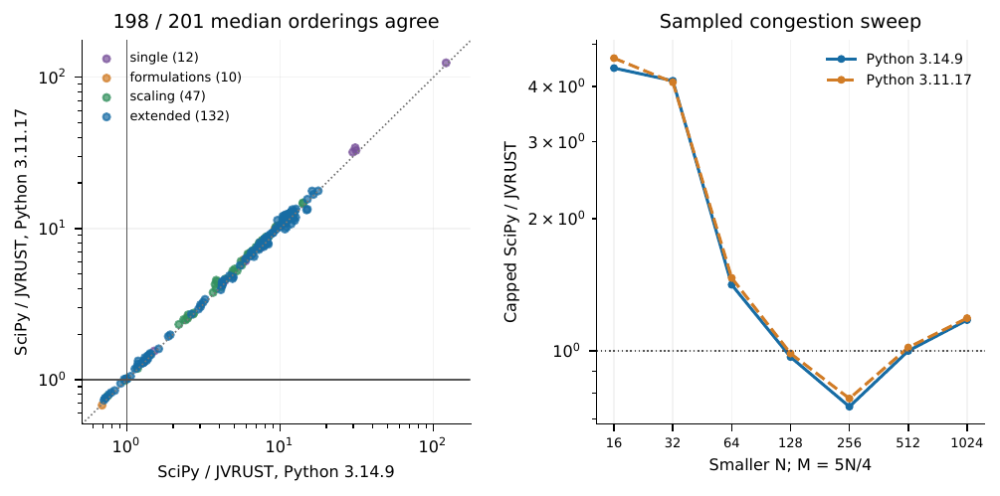
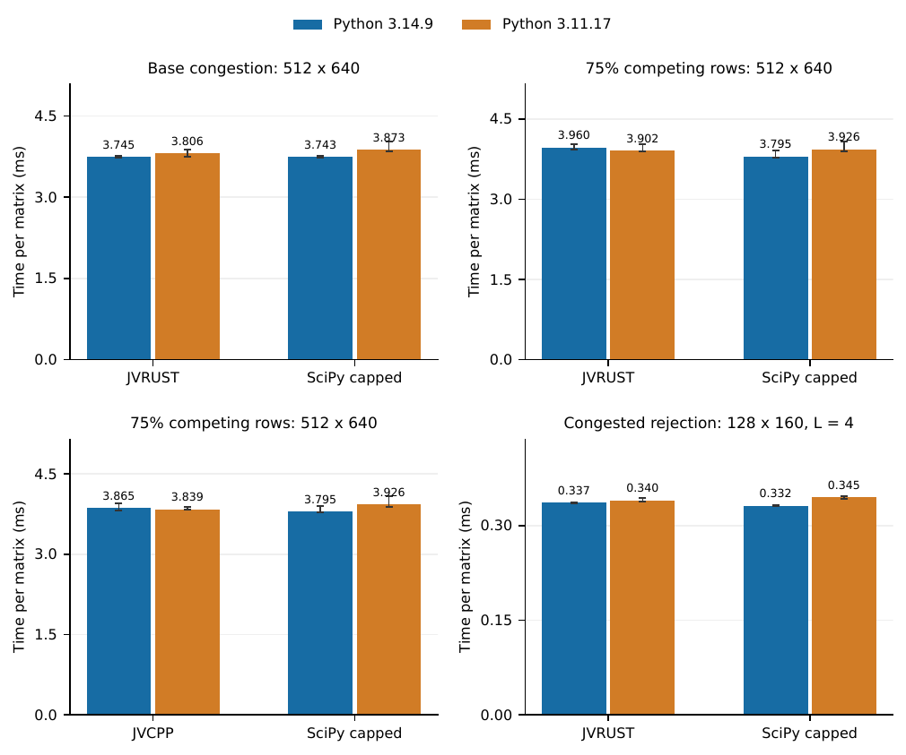
Appendix B Linux replication and comparison with Windows
B.1 Linux execution and validation
Both complete campaigns were repeated on Linux Mint 22.3, kernel 7.0.0-38-generic, with glibc 2.39 and the Intel Core i9-13900KS model used for the Windows measurements. The operating system reports 16 physical cores, 24 logical processors, and approximately 62.55 GiB of usable RAM. Python 3.14.9 uses NumPy 2.5.4 and SciPy 1.18.1; Python 3.11.17 uses NumPy 2.4.6 and SciPy 1.17.1. Both use LAPX 0.12.0 and laprust/lapcpp 1.1.0. The runs were collected overnight on 26–27 October 2026 and archived on 27 October. The primary Windows results in Section 6 and Appendix A are retained separately.
Each Linux measurement environment records identities for seven loaded native modules and installation metadata. The recorded native-module tags identify GCC 13.3.0 and, for Rust-bearing modules, rustc 1.98.0. The Python version strings identify GCC 14.3.0 for the interpreter build. These records identify components of the environment; they do not independently establish complete package build flags or source-to-binary lineage.
Single-matrix timings use logical CPU 0. Linux batch timings use logical CPUs 0, 2, 4, and 6, confirmed as four distinct physical cores; Windows used logical CPUs 0–3, whose physical-core mapping was not captured. Visible BLAS pools use one thread. The Linux governor is recorded as powersave, with a reported maximum of 6 GHz for the selected CPUs. Neither that maximum nor affinity establishes a fixed operating frequency. Session state, native binaries, compiler settings, operating-system behavior, and batch placement differ, so this comparison cannot isolate any one of them.
Each Linux collection contains the same 204 timing cases, 994 method/case settings, 8,946 samples, and 415 memory observations as its Windows counterpart, with no excluded settings. All nine-round summaries were recomputed from saved samples, and shuffled schedules match Windows. Recorded input hashes match directly; the twelve original single-case hash groups are checked against a reference independently regenerated from the frozen Windows generator, with five recorded finite-formulation cases cross-checked. All 3,925 compared timed and repeated-memory objectives agree exactly with the corresponding Windows collection, including the recorded timing match counts.
Each run passes 34 harness tests and the selected installed-package Python suites, excluding setup and editable-install tests: 2,704 LAPX tests, 1,167 laprust tests, and 1,167 lapcpp tests. The main enumeration checks cover 16,800 solver calls, including 80 expected infeasible calls; the separate formulation checks cover 10,520 calls. Batch checks validate 11,040 outputs, and the extension covers 23 edge instances with 129 solver checks, including 15 expected infeasible outcomes. Native Rust/C++ build tests were not performed in these run-only Linux campaigns. Raw samples, all scaling and extension cases, memory trials, and the nineteen campaign charts remain in each collection.
B.2 Single-matrix runtime
Tables B1 and B2 repeat the main single-call comparison on Linux. Their finite-limit SciPy, JVS, and JVC entries use square expansion, as in Table 4; compact finite-limit baselines appear in Tables B5 and B6. Times are within-environment medians, without pooling the two Python versions.
| Case | JVRUST | JVHYBRID | JVCPP | JVX | JVS | JVC | SciPy |
|---|---|---|---|---|---|---|---|
| Square 128 128 | 59.10 | 60.02 | 62.80 | 134.52 | 121.97 | 239.68 | 262.93 |
| Square 512 512 | 1017.14 | 1049.33 | 1122.70 | 4104.75 | 3819.61 | 5516.40 | 4968.86 |
| Wide 64 512 | 11.29 | 11.09 | 13.58 | 451.10 | 601.00 | 969.99 | 71.99 |
| Tall 512 64 | 25.30 | 23.35 | 75.83 | 465.09 | 612.63 | 1218.57 | 141.11 |
| Rectangle 256 320 | 70.64 | 71.30 | 80.65 | 177.45 | 169.15 | 3935.82 | 545.44 |
| Blocks 256 320 | 1008.60 | 1023.61 | 1115.34 | 11885.47 | 11195.14 | 5371.39 | 1403.04 |
| Ties 128 160 | 48.94 | 51.75 | 53.17 | 55.84 | 61.34 | 78.52 | 74.57 |
| 128 160, | 12.73 | 12.66 | 17.47 | 431.15 | 447.24 | 1987.77 | 428.30 |
| 256 320, | 67.72 | 67.47 | 71.18 | 2627.08 | 2684.18 | 13696.09 | 1743.18 |
| Tight 128 160, | 8.97 | 9.02 | 13.10 | 369.42 | 387.17 | 2313.15 | 1055.88 |
| Signed 128 160, | 13.54 | 13.55 | 17.94 | 857.06 | 886.66 | 2756.80 | 425.15 |
| Square 128, | 83.38 | 83.30 | 89.90 | 209.55 | 207.79 | 468.94 | 499.95 |
| Case | JVRUST | JVHYBRID | JVCPP | JVX | JVS | JVC | SciPy |
|---|---|---|---|---|---|---|---|
| Square 128 128 | 57.37 | 60.67 | 66.06 | 131.86 | 123.38 | 240.13 | 262.21 |
| Square 512 512 | 998.14 | 1073.42 | 1142.00 | 4031.44 | 3772.81 | 5508.80 | 4970.18 |
| Wide 64 512 | 10.75 | 10.66 | 14.01 | 459.68 | 615.57 | 967.50 | 71.85 |
| Tall 512 64 | 22.91 | 22.92 | 76.15 | 472.44 | 622.37 | 1211.91 | 141.16 |
| Rectangle 256 320 | 68.98 | 69.76 | 79.50 | 173.96 | 173.15 | 3990.47 | 544.12 |
| Blocks 256 320 | 989.13 | 1014.80 | 1099.26 | 11829.55 | 11118.77 | 5376.99 | 1400.96 |
| Ties 128 160 | 54.45 | 50.80 | 51.50 | 52.92 | 59.03 | 78.10 | 74.74 |
| 128 160, | 12.61 | 12.17 | 17.81 | 454.91 | 439.41 | 1971.26 | 427.55 |
| 256 320, | 67.59 | 68.02 | 73.26 | 2707.44 | 2667.49 | 13587.55 | 1742.31 |
| Tight 128 160, | 8.78 | 8.84 | 13.27 | 387.67 | 383.88 | 2292.80 | 1064.35 |
| Signed 128 160, | 13.50 | 13.61 | 18.47 | 907.10 | 864.39 | 2760.75 | 424.80 |
| Square 128, | 82.95 | 83.07 | 92.72 | 210.09 | 207.14 | 465.26 | 499.15 |
All three native methods beat SciPy on the required congested 256 320 case in both Linux runs. JVRUST takes 1.009 and 0.989 ms, compared with SciPy’s 1.403 and 1.401 ms. This required-assignment result is distinct from the finite-limit congested case below. JVRUST is faster than JVCPP in all twelve Linux 3.14 cases and eleven of twelve Linux 3.11 cases; that descriptive ordering differs from the Windows required-block ordering and does not isolate a language or compiler effect.
B.3 Batch runtime
Tables B3 and B4 report complete-batch latency, including output construction. For 1024 problems of size 8 10, JVRUST’s sequential-loop-to-batch ratio is 2.20 with one worker and 5.86 with four workers in Linux Python 3.14; the corresponding Python 3.11 ratios are 2.04 and 5.43. These are ratios within each run. The different Windows and Linux logical CPU groups must be considered when comparing platforms.
| Method | 64 (64 80) required, ms | 16 (128 160) , ms | 1024 (8 10) required, ms |
|---|---|---|---|
| JVRUST sequential loop | 0.735 | 0.397 | 1.083 |
| JVRUST batch, 1 worker | 0.647 | 0.390 | 0.493 |
| JVRUST batch, 4 workers | 0.187 | 0.121 | 0.185 |
| JVHYBRID batch, 1 worker | 0.694 | 0.410 | 0.512 |
| JVHYBRID batch, 4 workers | 0.193 | 0.118 | 0.187 |
| JVCPP batch, 1 worker | 0.727 | 0.419 | 0.519 |
| JVCPP batch, 4 workers | 0.263 | 0.165 | 0.231 |
| JVX batch, 1 worker | 1.627 | 7.631 | 5.197 |
| JVX batch, 4 workers | 1.508 | 2.441 | 10.691 |
| SciPy sequential loop | 2.650 | 7.685 | 2.265 |
| Method | 64 (64 80) required, ms | 16 (128 160) , ms | 1024 (8 10) required, ms |
|---|---|---|---|
| JVRUST sequential loop | 0.694 | 0.389 | 0.983 |
| JVRUST batch, 1 worker | 0.607 | 0.382 | 0.483 |
| JVRUST batch, 4 workers | 0.178 | 0.121 | 0.181 |
| JVHYBRID batch, 1 worker | 0.642 | 0.395 | 0.504 |
| JVHYBRID batch, 4 workers | 0.183 | 0.121 | 0.181 |
| JVCPP batch, 1 worker | 0.693 | 0.430 | 0.502 |
| JVCPP batch, 4 workers | 0.252 | 0.173 | 0.226 |
| JVX batch, 1 worker | 1.586 | 7.956 | 4.965 |
| JVX batch, 4 workers | 1.611 | 2.550 | 11.713 |
| SciPy sequential loop | 2.662 | 7.682 | 2.318 |
B.4 Formulation comparison
Tables B5 and B6 use the same five within-round methods and ten workloads as Table 7. Unmatched counts are means over the four inputs. In both Linux environments, JVRUST and JVCPP beat capped SciPy in nine cases, while capped SciPy wins the congested 256 320 case. Its advantage over JVRUST there is 1.50 times in Python 3.14 and 1.47 times in Python 3.11. Avoiding square expansion therefore remains useful without guaranteeing a win over another original-dimension solver.
| Case | Unmatched | JVRUST | JVCPP | Square | Dummy cols | Capped |
|---|---|---|---|---|---|---|
| 128 160, | 0.00 | 12.61 | 17.49 | 428.63 | 249.52 | 124.22 |
| 256 320, | 0.00 | 67.67 | 71.12 | 1762.90 | 1061.63 | 534.19 |
| 128 160, | 8.25 | 8.94 | 13.13 | 1054.32 | 244.41 | 103.38 |
| Signed 128 160, | 0.00 | 13.49 | 17.96 | 424.93 | 230.68 | 134.12 |
| Square 128, | 0.00 | 83.47 | 89.99 | 510.53 | 393.99 | 212.81 |
| 128 160, | 87.75 | 5.57 | 6.48 | 819.45 | 165.41 | 69.70 |
| 128 160, | 117.00 | 5.45 | 6.15 | 502.35 | 159.73 | 64.14 |
| Tall 160 128, | 89.50 | 14.29 | 12.06 | 848.11 | 169.05 | 76.57 |
| Wide 64 512, | 18.00 | 8.32 | 8.41 | 1567.90 | 194.10 | 82.60 |
| Blocks 256 320, | 112.00 | 1059.52 | 1022.86 | 2073.00 | 1376.14 | 706.52 |
| Case | Unmatched | JVRUST | JVCPP | Square | Dummy cols | Capped |
|---|---|---|---|---|---|---|
| 128 160, | 0.00 | 12.66 | 17.98 | 428.09 | 248.37 | 124.18 |
| 256 320, | 0.00 | 67.79 | 73.45 | 1741.51 | 1062.94 | 532.73 |
| 128 160, | 8.25 | 8.87 | 13.36 | 1054.44 | 243.08 | 102.92 |
| Signed 128 160, | 0.00 | 13.65 | 18.58 | 424.94 | 230.66 | 132.90 |
| Square 128, | 0.00 | 82.88 | 92.50 | 499.34 | 392.17 | 212.71 |
| 128 160, | 87.75 | 5.50 | 6.56 | 820.27 | 168.50 | 69.65 |
| 128 160, | 117.00 | 5.31 | 6.16 | 502.13 | 161.74 | 64.14 |
| Tall 160 128, | 89.50 | 12.76 | 12.87 | 848.33 | 171.82 | 76.75 |
| Wide 64 512, | 18.00 | 8.23 | 8.49 | 1567.17 | 191.20 | 82.47 |
| Blocks 256 320, | 112.00 | 1041.35 | 1011.45 | 2078.78 | 1372.49 | 706.35 |
B.5 Four-environment comparisons
Table B7 uses 71 required cases against ordinary SciPy, 125 finite-limit cases against capped SciPy, and five additional initial finite-limit cases against square-expanded SciPy in each environment. JVRUST wins all 71 ordinary required cases, 112, 115, 110, and 110 of the 125 capped cases in Windows 3.14, Windows 3.11, Linux 3.14, and Linux 3.11, respectively, and all five expanded cases. Capped SciPy is not uniformly the fastest evaluated compact formulation. The 201 non-batch cases comprise 12 single-call, 10 formulation, 47 scaling, and 132 extension cases; JVHYBRID has 76 comparable cases under the recorded method grid. Counts weight designed cases equally, not an application workload distribution.
| Environment | JVRUST wins /201 | JVCPP wins /201 | JVHYBRID wins /76 | Maximum native/SciPy () |
|---|---|---|---|---|
| Windows 3.14.9 | 188 | 188 | 76 | 1.457 |
| Windows 3.11.17 | 191 | 189 | 76 | 1.475 |
| Linux 3.14.9 | 186 | 186 | 76 | 1.500 |
| Linux 3.11.17 | 186 | 185 | 76 | 1.474 |
The largest ratio over all four environments is 1.49963 for JVRUST on Linux Python 3.14’s finite-limit 256 320 formulation case, or about 1.50 times the capped-SciPy median. The largest finite-limit congested scaling point still favors both native methods on Linux, but more narrowly than on Windows. At 1024 1280, JVRUST/capped-SciPy time ratios are 0.975 and 0.954 on Linux, compared with 0.851 and 0.843 on Windows; JVCPP’s Linux ratios are 0.942 and 0.934. Intermediate sizes cross more than once, so neither a persistent crossover nor a universal congestion ranking follows from this sweep. In this sampled 5:4 family, the cap is enabled from ; its factor was chosen using the paper’s own congestion workload families and additional variants, so these crossovers are not a held-out test of the heuristic.
JVRUST’s median ordering against matching SciPy agrees between platforms in 199 of 201 cases at Python 3.14 and 196 of 201 at Python 3.11 (Figure B1). Across all three native methods, 6 of the 478 native/SciPy orderings reverse between platforms at Python 3.14 and 9 at Python 3.11. Broader rankings change more often: across all 2,104 within-case solver pairs, 164 and 177 orderings reverse across platforms, and the fastest median changes in 70 and 77 of the 204 cases, respectively. These counts include close gaps and deliberately varied workloads; they are descriptive comparisons rather than tests of statistical significance or isolated operating-system effects.
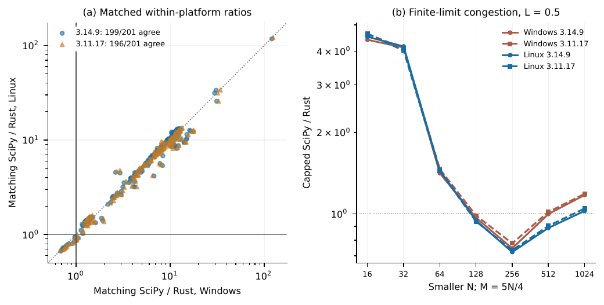
The large square and rectangular cases retain native advantages over SciPy. For a required 5000 5000 problem, Linux JVRUST medians are 246.630 and 245.746 ms in Python 3.14 and 3.11, versus SciPy’s 1045.025 and 1045.667 ms. With finite limit 0.0004, JVRUST takes 10.868 and 10.883 ms versus capped SciPy’s 127.272 and 126.554 ms. These examples do not establish an advantage on every structured instance or for every specialized optional-assignment implementation.
Four-worker batching shows a clearer implementation difference than the near-equal native single-call curves. Over the three Linux batches, JVCPP/JVRUST median-time ratios range from 1.25 to 1.43, whereas the Windows ratios range from 0.93 to 1.01. JVRUST and JVHYBRID use Rayon pools and JVCPP uses its C++ pool, but the measurements do not isolate scheduling, compiler, placement, or operating-system contributions. Figure B2 retains absolute batch times as well as ratios.
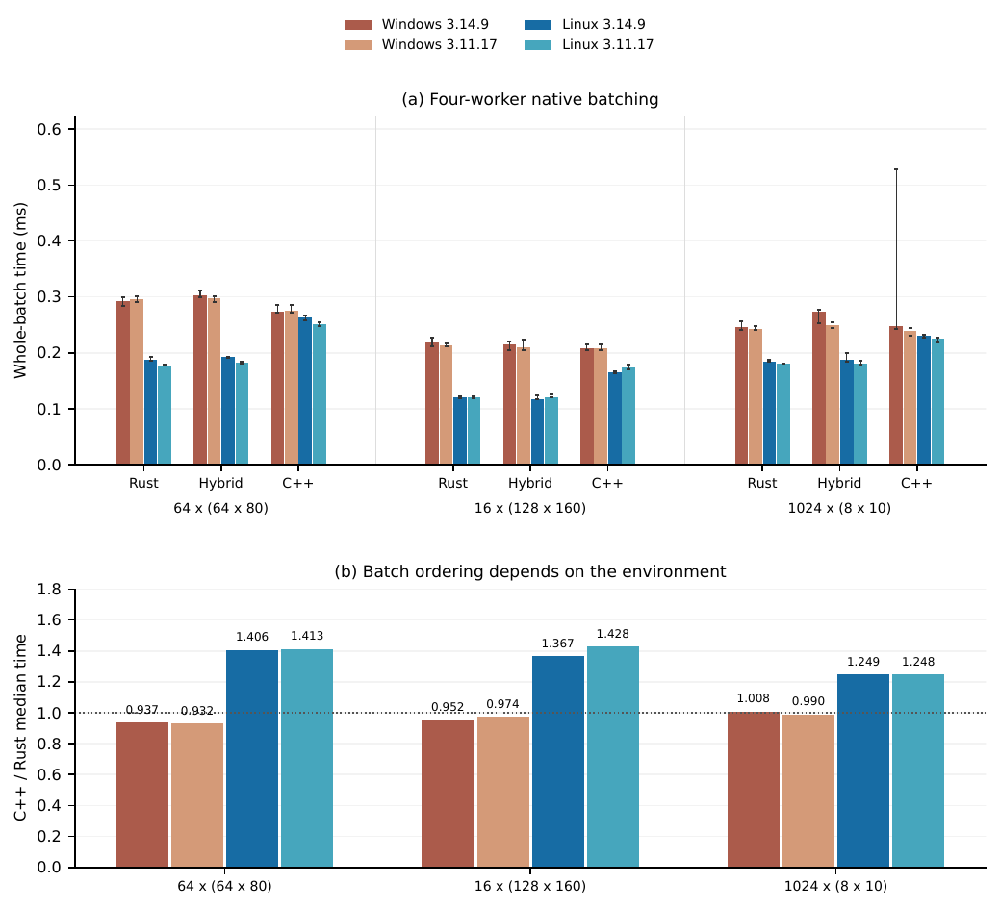
B.6 Memory context
The Linux measurements use getrusage(RUSAGE_SELF).ru_maxrss, returned in KiB and converted to bytes, rather than the Windows peak-working-set counter. Each observation is the nonnegative increase of that process high-water mark after the input is prepared and resident. The two operating-system metrics remain separate. They describe observed resident-memory peaks, not allocations or an exact native-workspace size.
Zero increments are frequent: 302 of 415 Linux Python 3.14 observations and 313 of 415 Linux Python 3.11 observations, compared with 26 and 27 in the corresponding Windows collections. Before the measured solve, Linux process peaks can exceed current RSS by as much as 8.86 and 10.21 MiB. New resident growth that stays below that earlier peak leaves the high-water counter unchanged. Consequently, a zero plotted increment does not mean that a solver allocated no memory, and ratios to such zeros are not meaningful.
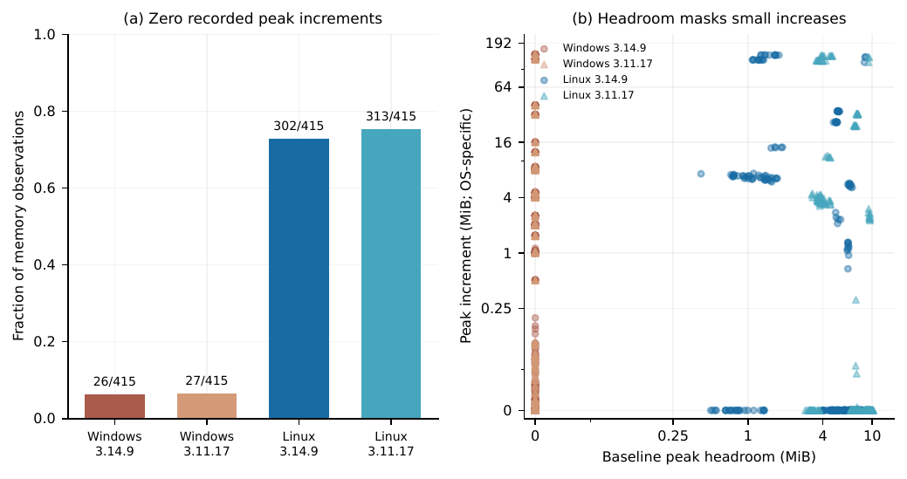
The original Linux extension charts retain a Windows-oriented working-set axis label in their memory sweep. Their saved counter metadata establishes that the actual Linux measurement is RSS; the paper’s Linux derivatives use the explicit RSS terminology. Original campaign evidence is retained unchanged. Formulation buffer sizes remain exact calculations independent of these counters: 8 MiB for the original 256 4096 float64 costs, 128 MiB for a 4096-square padded matrix, and 144.5 MiB for the 4352-square rejection expansion.
Appendix C Real-video tracking and common-cost replay
C.1 Clips, detection conditions and preserved sessions
The pyppbox toolbox was introduced in the PoseTReID extension study [26]; this benchmark uses version 4.0.0 [23]. The application study uses frames from the MOT16-04 [20] and MOT20-03 [21] image sequences. The provided frames were packaged into video clips using FFmpeg for ingestion by pyppbox. The evaluated clips each contain 999 decoded frames at 24 fps, with frame sizes 1920 1080 and 1174 880 pixels, respectively. These excerpts do not cover the complete original benchmark sequences; the video encoding rate describes the prepared inputs. Decoded index k maps to converted-GT frame k+1. Input and annotation hashes, frame coverage and alignment checks are retained. The converted five-column annotations do not retain the original class, visibility and ignore-region policy.
Each clip has two detection conditions. GT-derived boxes provide an oracle detection condition through pyppbox’s GTInterpreter with detect_only=True; reference identities are withheld. The real detector condition uses pyppbox V4’s RF-DETR adapter [23, 24], package version 1.10.1, the Nano checkpoint, confidence 0.20, maximum 300 detections and minimum box width 15 pixels. Person class 1 and representative-point calibration 0.25 follow the recorded adapter configuration. The model configuration, optimized inference configuration and warmup input-tensor observations all record 768 768 inference, rather than the checkpoint’s native 384-pixel default. Detection preparation uses an NVIDIA GeForce RTX 4090 with PyTorch 2.5.1+cu121; initialization, excluded warmups, synchronized detector timings and checkpoint identity are recorded separately. Detection outputs are cached once and reused across assignment methods. Both conditions use the same fixed geometric ordering and pass boxes, confidence and representative points to trackers without GT identities.
GT and RF measurements were recorded in separate sessions on 27 October 2026: 09:43:50–09:56:30 UTC for GT and 10:29:59–10:35:44 UTC for RF. Samples remain separate rather than being pooled between sessions. Both sessions retain CPU, platform, interpreter and package identities. Matching recorded identities do not establish independent-day replication or fixed thermal conditions.
The detector setting was selected in an exploratory pilot using frames 1, 250, 500, 750 and 999 from each clip. The pilot compared resolutions 384, 768 and 1024, confidence thresholds 0.2 and 0.4, and minimum widths 0 and 15 pixels; 768/0.2 gave the largest sampled supplied-box F1 on both clips. The pilot frames overlap the benchmark clips, so the detector assessment is not held out. The pilot records and selection criterion are retained separately from the published solver timings.
C.2 Tracking, assignment interfaces and timing
The CPU measurements use the Intel Core i9-13900KS host on Windows build 26300, with 16 physical and 24 logical processors reported by the operating system. Python is 3.11.17, NumPy 2.4.6, SciPy 1.17.1, LAPX 0.12.0, laprust/lapcpp 1.1.0 and pyppbox 4.0.0. Tracking and replay are sequential, restricted to logical CPU 0 with visible library pools limited to one thread. CPU frequency and background activity are not fixed. The GPU detector preparation is outside these CPU timings.
The stock Centroid tracker uses maximum representative-point spread 64. SORT uses maximum age 1, minimum hits 3 and IoU threshold 0.3 [22, 23]. Centroid retains its gated-distance full assignment and subsequent acceptance test. SORT retains full assignment and IoU post-filtering, including its unique-feasible association bypass. No finite-limit objective is substituted, and dependent video frames are not batched into independent assignments. Table C1 describes actual assignment calls; the input-box totals count observations across frames rather than unique people. Matrix dimensions and square fractions refer specifically to the common SciPy-captured corpus.
| Pipeline | GT boxes | Det. boxes | Det./frame | LAP calls | Rows min–max | Cols min–max | Square % |
|---|---|---|---|---|---|---|---|
| MOT16-04 / GT / Centroid | 51545 | 51545 | 51.60 | 998 | 47–56 | 47–56 | 94.0 |
| MOT16-04 / GT / SORT | 51545 | 51545 | 51.60 | 998 | 47–56 | 47–56 | 91.7 |
| MOT16-04 / RF768 / Centroid | 51545 | 30621 | 30.65 | 998 | 22–39 | 23–39 | 18.6 |
| MOT16-04 / RF768 / SORT | 51545 | 30621 | 30.65 | 976 | 23–39 | 24–42 | 7.2 |
| MOT20-03 / GT / Centroid | 106637 | 106637 | 106.74 | 998 | 84–134 | 84–134 | 74.9 |
| MOT20-03 / GT / SORT | 106637 | 106637 | 106.74 | 998 | 84–134 | 84–134 | 66.1 |
| MOT20-03 / RF768 / Centroid | 106637 | 45990 | 46.04 | 998 | 34–62 | 34–62 | 14.6 |
| MOT20-03 / RF768 / SORT | 106637 | 45990 | 46.04 | 575 | 36–62 | 39–66 | 8.5 |
The nine timed interfaces are LAPX lapjv, lapjvx, lapjvxa, lapjvh, lapjvs and lapjvc, standalone laprust.lapjv and lapcpp.lapjv, and SciPy. LAPX lapjvr is an untimed alias-validation entry for laprust. The application adapter returns the int32 pair arrays expected by pyppbox, with total-cost calculation disabled. Normal contiguous conversion, finite checks, solving, output adaptation and cardinality checks are included. This application interface contract differs from the int64 outputs of the controlled assignment study.
Stock tracking constructs float32 costs. Primary timing sums only sequential tracker.update calls; constructing fresh Person objects, copying emitted results, serialization, evaluation, decoding and detection are excluded. Each method receives 32 excluded warmup frames, then a freshly initialized tracker; SORT’s global ID counter is reset. Nine seeded-shuffled rounds use master seed 20261027. Garbage collection is disabled during measured runs. Each sample is a whole-clip mean update time, and Table C2 reports its nine-round median and [Q1, Q3]. Update FPS is the reciprocal of this mean time, not complete video-pipeline throughput. Separately instrumented passes record solver-call counts and assignment shares, with a separate non-capturing SciPy pass so capture I/O does not inflate those shares. Repeated and instrumented runs retain the same predictions for each configured method.
| Pipeline | scipy | lapjvh | laprust | lapcpp |
|---|---|---|---|---|
| MOT16-04 / GT / Centroid | 0.129 [0.125, 0.131] | 0.119 [0.119, 0.120] | 0.116 [0.115, 0.117] | 0.116 [0.115, 0.120] |
| MOT16-04 / GT / SORT | 1.549 [1.530, 1.560] | 1.546 [1.538, 1.569] | 1.557 [1.548, 1.571] | 1.549 [1.531, 1.549] |
| MOT16-04 / RF768 / Centroid | 0.079 [0.075, 0.082] | 0.071 [0.069, 0.073] | 0.073 [0.069, 0.073] | 0.073 [0.071, 0.075] |
| MOT16-04 / RF768 / SORT | 1.022 [1.011, 1.058] | 1.022 [1.016, 1.052] | 1.010 [1.005, 1.037] | 1.016 [1.006, 1.031] |
| MOT20-03 / GT / Centroid | 0.324 [0.323, 0.330] | 0.295 [0.292, 0.298] | 0.292 [0.290, 0.294] | 0.294 [0.291, 0.300] |
| MOT20-03 / GT / SORT | 3.176 [3.139, 3.180] | 3.140 [3.111, 3.159] | 3.109 [3.092, 3.138] | 3.153 [3.135, 3.211] |
| MOT20-03 / RF768 / Centroid | 0.111 [0.110, 0.111] | 0.110 [0.105, 0.110] | 0.106 [0.105, 0.107] | 0.109 [0.105, 0.113] |
| MOT20-03 / RF768 / SORT | 1.471 [1.446, 1.496] | 1.478 [1.462, 1.504] | 1.474 [1.455, 1.495] | 1.483 [1.450, 1.500] |
C.3 Common-cost replay and objective checks
A SciPy capture preserves 7,539 matrices across the eight pipelines. Every replay method receives that same complete corpus for its pipeline, controlling for changes to live tracker state. Each float32 matrix is separately widened to float64 without recomputing geometry, so the two views examine assignment interfaces on the same represented values. Conversion to the replay corpus dtype occurs before timing; normal adapter work remains included. Input loading, capture, objective checks, warmup and calibration are excluded. Calibration targets blocks of at least 30 ms, and nine seeded-shuffled rounds yield corpus mean times. Table C3 reports median [Q1, Q3] microseconds per assignment, while the artifact retains all nine methods and their round means.
| Pipeline / precision | scipy | lapjvh | laprust | lapcpp |
|---|---|---|---|---|
| MOT16-04 / GT / Centroid / float32 | 14.78 [14.64, 14.97] | 5.57 [5.55, 5.68] | 5.77 [5.76, 5.85] | 6.25 [6.22, 6.45] |
| MOT16-04 / GT / Centroid / float64 | 14.41 [14.25, 14.76] | 6.02 [5.99, 6.48] | 6.13 [6.06, 6.41] | 6.52 [6.48, 6.72] |
| MOT16-04 / GT / SORT / float32 | 14.84 [14.67, 16.55] | 6.02 [5.85, 6.12] | 5.90 [5.81, 6.91] | 6.33 [6.27, 6.75] |
| MOT16-04 / GT / SORT / float64 | 14.46 [14.39, 14.87] | 6.31 [6.29, 6.59] | 6.33 [6.20, 6.52] | 6.58 [6.49, 6.81] |
| MOT16-04 / RF768 / Centroid / float32 | 8.97 [8.82, 9.01] | 5.02 [4.96, 5.06] | 5.00 [4.97, 5.09] | 5.21 [5.18, 5.23] |
| MOT16-04 / RF768 / Centroid / float64 | 8.75 [8.69, 8.99] | 5.14 [5.13, 5.16] | 5.20 [5.12, 5.31] | 5.39 [5.37, 5.47] |
| MOT16-04 / RF768 / SORT / float32 | 9.91 [9.72, 10.04] | 4.07 [4.06, 4.14] | 4.09 [4.09, 4.11] | 4.16 [4.15, 4.20] |
| MOT16-04 / RF768 / SORT / float64 | 9.49 [9.41, 9.55] | 4.25 [4.23, 4.29] | 4.27 [4.21, 4.28] | 4.36 [4.30, 4.41] |
| MOT20-03 / GT / Centroid / float32 | 46.99 [46.79, 50.21] | 17.15 [16.75, 18.25] | 16.81 [16.72, 18.18] | 19.01 [18.60, 20.15] |
| MOT20-03 / GT / Centroid / float64 | 45.83 [45.42, 46.16] | 18.32 [18.22, 18.60] | 18.31 [18.27, 19.67] | 20.23 [20.07, 21.51] |
| MOT20-03 / GT / SORT / float32 | 47.98 [47.70, 50.79] | 15.21 [15.15, 15.51] | 15.29 [15.20, 15.50] | 16.45 [16.30, 17.03] |
| MOT20-03 / GT / SORT / float64 | 47.02 [46.33, 47.75] | 16.64 [16.57, 17.04] | 16.80 [16.73, 17.51] | 17.80 [17.73, 18.29] |
| MOT20-03 / RF768 / Centroid / float32 | 14.68 [14.42, 15.01] | 10.59 [10.36, 10.69] | 10.29 [10.15, 10.88] | 11.90 [11.39, 12.03] |
| MOT20-03 / RF768 / Centroid / float64 | 14.01 [13.98, 14.04] | 10.70 [10.49, 10.77] | 10.56 [10.48, 10.63] | 11.94 [11.80, 12.02] |
| MOT20-03 / RF768 / SORT / float32 | 15.50 [15.32, 15.63] | 5.41 [5.32, 5.45] | 5.40 [5.37, 5.46] | 5.59 [5.58, 5.62] |
| MOT20-03 / RF768 / SORT / float64 | 14.69 [14.59, 14.99] | 5.76 [5.66, 5.78] | 5.73 [5.61, 5.77] | 5.91 [5.70, 6.14] |
The saved common-corpus validation covers 7,539 matrices, two precision views and ten backend entries: the nine timed methods plus the LAPX lapjvr alias. This gives 150,780 backend/matrix checks, excluding separate SciPy-reference and additional alias-comparison solves. Every recorded objective difference is exactly zero under float64 accumulation on the represented costs; the alias objectives also agree. This is saved-instance finite-precision evidence, not a general numerical proof. The archived post-run correctness audits additionally compare actual online assignment costs and inspect equal-cost decisions; those checks contribute no performance samples.
C.4 Supplied-box accuracy and application limits
Accuracy is computed outside timing with motmetrics 1.4.0 [25], using its SciPy assignment backend independently of the tracker backend. Each decoded frame, including empty frames, updates the accumulator. Continuous xyxy IoU at least 0.5 defines eligible object/prediction pairs; predicted identity labels need not equal reference IDs. The evaluation reports IDF1, MOTA, identity switches, false positives and misses against the supplied converted boxes. It does not reconstruct official MOTChallenge class/visibility/ignore filtering. Table C4 therefore reports supplied-box scores, not leaderboard results. Its ranges span all nine backends; rounding can hide tiny MOTA differences, for which exact counts and unrounded scores remain available.
| Pipeline | IDF1 % min–max | MOTA % min–max | IDSW min–max | FP min–max | FN min–max |
|---|---|---|---|---|---|
| MOT16-04 / GT / Centroid | 99.48–100.00 | 100.00–100.00 | 0–1 | 0–0 | 0–0 |
| MOT16-04 / GT / SORT | 99.12–99.12 | 99.78–99.78 | 0–0 | 0–0 | 115–115 |
| MOT16-04 / RF768 / Centroid | 28.07–28.44 | 40.40–40.42 | 1568–1579 | 4108–4109 | 25032–25033 |
| MOT16-04 / RF768 / SORT | 34.99–34.99 | 40.60–40.60 | 535–535 | 2273–2273 | 27811–27811 |
| MOT20-03 / GT / Centroid | 100.00–100.00 | 100.00–100.00 | 0–0 | 0–0 | 0–0 |
| MOT20-03 / GT / SORT | 99.76–99.76 | 99.51–99.51 | 0–0 | 0–0 | 518–518 |
| MOT20-03 / RF768 / Centroid | 28.50–28.90 | 38.13–38.13 | 2990–2993 | 1168–1168 | 61815–61815 |
| MOT20-03 / RF768 / SORT | 36.75–36.75 | 35.58–35.58 | 729–729 | 619–619 | 67348–67348 |
GT detections separate association from detection error; they do not establish real-detector accuracy. Under RF detections, the native implementations’ Centroid identity scores can be either higher or lower than SciPy’s, and MOTA need not move in the same direction. Inspection of the Centroid tracker shows that identity propagation does not change its current/previous detection geometry: different equal-cost accepted assignments can therefore propagate different identities on the same numerical inputs. SORT has matching saved IDF1/MOTA/switch/FP/FN scores across all nine methods on these clips, even though an equal-cost choice can change a later emitted box. These observations establish neither a general tracking-accuracy gain nor identical hidden tracker states.
Assignment replay gains are larger than tracker-update gains. The stock SORT bypass and motion/bookkeeping work reduce the fraction attributable to assignment, and the relative contribution differs across input conditions. The two clips, two simple trackers, one detector/checkpoint/configuration and same-day sessions do not define a held-out application population. No detector-plus-tracker throughput, application memory benefit, universal speedup or native finite-limit application advantage is inferred. The frozen collection retains every method/pipeline absolute result, IQR, prediction, metric record, call profile, cost matrix, source snapshot and session identity; the compact tables do not replace those full records.